<!doctype html>
<html lang="en">
<head>
  <meta charset="utf-8">
  <meta name="viewport" content="width=device-width, initial-scale=1">
  <title>arxiv digest — 2026-08-07</title>
  <style>
:root {
  --bg: #ffffff;
  --fg: #1f2328;
  --muted: #59636e;
  --border: #d0d7de;
  --card: #f6f8fa;
  --link: #0969da;
}
body {
  max-width: 980px;
  margin: 0 auto;
  padding: 2rem 1rem 5rem;
  font-family: -apple-system, BlinkMacSystemFont, "Segoe UI", Helvetica, Arial, sans-serif;
  line-height: 1.55;
  color: var(--fg);
  background: var(--bg);
}
a { color: var(--link); }
img { max-width: 100%; height: auto; }
pre, code { background: var(--card); border-radius: 6px; }
pre { padding: 1rem; overflow-x: auto; }
blockquote { border-left: 4px solid var(--border); padding-left: 1rem; color: var(--muted); }
details { margin: 0.6rem 0; }
summary { cursor: pointer; font-weight: 600; }
.paper-figures-scroll {
  display: flex;
  gap: 1rem;
  overflow-x: auto;
  overscroll-behavior-x: contain;
  padding: 0.75rem 0.25rem 1rem;
  margin: 1rem 0 1.25rem;
  border-top: 1px solid var(--border);
  border-bottom: 1px solid var(--border);
  scroll-snap-type: x proximity;
}
.paper-figure-card {
  flex: 0 0 min(260px, 72vw);
  scroll-snap-align: start;
  background: var(--card);
  border: 1px solid var(--border);
  border-radius: 12px;
  padding: 0.55rem;
}
.paper-figure-card img {
  display: block;
  width: 100%;
  max-height: 240px;
  object-fit: contain;
  background: white;
  border-radius: 8px;
}
.paper-figure-caption {
  display: block;
  margin-top: 0.5rem;
  color: var(--muted);
  font-size: 0.85rem;
}
.figure-strip-hint {
  color: var(--muted);
  font-size: 0.9rem;
  margin-bottom: -0.3rem;
}
</style>
  <!-- MathJax: renders $...$ inline math and $$...$$ display math, plus
       \(...\) and \[...\]. Loaded from the official CDN; works offline
       once cached. Configured to skip code/pre blocks so arxiv IDs that
       look like dollar amounts don't get mangled. -->
  <script>
    window.MathJax = {
      tex: {
        inlineMath: [['$', '$'], ['\\(', '\\)']],
        displayMath: [['$$', '$$'], ['\\[', '\\]']],
        processEscapes: true,
        processEnvironments: true
      },
      options: {
        skipHtmlTags: ['script', 'noscript', 'style', 'textarea', 'pre', 'code'],
        ignoreHtmlClass: 'tex2jax_ignore',
        processHtmlClass: 'tex2jax_process'
      }
    };
  </script>
  <script id="MathJax-script" async
    src="https://cdn.jsdelivr.net/npm/mathjax@3/es5/tex-chtml.js"></script>
</head>
<body>
<header style="background-color: #333; color: white; padding: 15px; margin-bottom: 20px;">
  <h1 style="margin: 0; font-size: 24px;">
    <a href="https://ochelpan.github.io/arXiv_clean/" style="color: white; text-decoration: none;">Main</a>
  </h1>
</header>

<h1>Daily arXiv Report</h1>

<hr>
<p>
<a href="index.html">← Index</a>
 · <a href="papers_01.html">← Previous</a> · <a href="papers_03.html">Next →</a>
</p>
<hr>

<h2>Papers 21–40</h2>
<p><a id="paper-2608.04731"></a></p>
<h3 id="an-improved-car-oriented-mean-field-theory-for-stochastic-traffic-flow-models"><a href="http://arxiv.org/abs/2608.04731v1">An improved car-oriented mean-field theory for stochastic traffic flow models</a></h3>
<p><strong>Authors:</strong> Yasar Efe Dai, Andreas Schadschneider, Michael Schreckenberg<br>
<strong>Type:</strong> theory · <strong>Category:</strong> statistical mechanics · <strong>PDF:</strong> <a href="https://arxiv.org/pdf/2608.04731v1">https://arxiv.org/pdf/2608.04731v1</a><br>
<strong>Analysis basis:</strong> full PDF text, analyzed in chunks
<strong>Topic relevance:</strong> 🔥 <code>methods for driven-dissipative</code> <strong>4/5</strong> · <code>Keldysh / 2PI / non-Gaussian methods</code> <strong>3/5</strong> · <code>non-equilibrium dynamics</code> <strong>2/5</strong> · <code>non-equilibrium universality</code> <strong>2/5</strong> · <code>Frenkel-Kontorova</code> <strong>1/5</strong> · <code>correlated / nonlocal dissipation</code> <strong>1/5</strong> · <code>driven-dissipative phase transition</code> <strong>1/5</strong></p>
<div class="figure-strip-hint">↔ Scroll figures horizontally</div>
<div class="paper-figures-scroll">
<figure class="paper-figure-card">
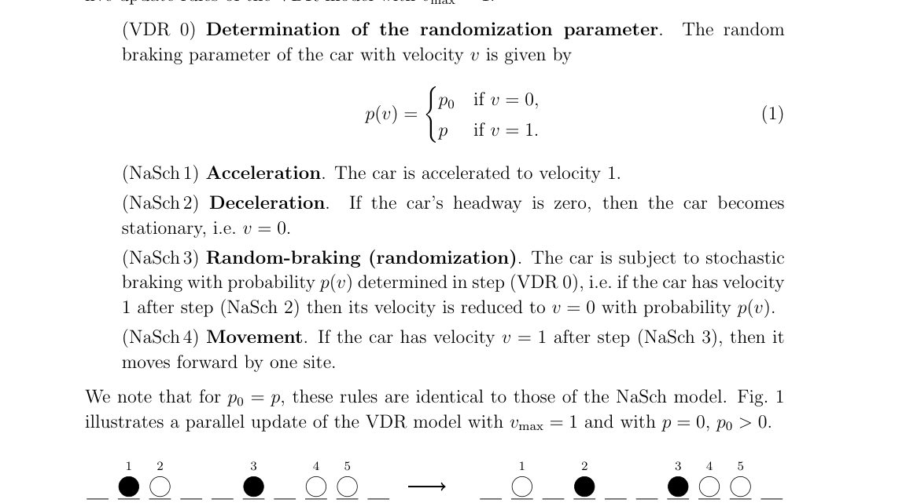
<figcaption class="paper-figure-caption"><b>Fig 1.</b> Figure 1: A parallel update of the VDR model on a lattice of length L = 10 with N = 5 cars in the limit p = 0, p0 &gt; 0. Black (white) circles denote cars with velocity 1 (0). The configuration at time t (left) leads to the configuration at time t + 1 (right) if car 2 stochastically restarts and car 5 stochastically remains stationary.</figcaption>
</figure>
<figure class="paper-figure-card">
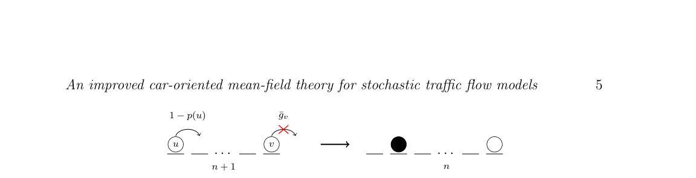
<figcaption class="paper-figure-caption"><b>Fig 2.</b> Figure 2: Schematic of the master equation for P10(n, t+1). It evolves from Puv(n+1, t) if the leading car does not move (with probability ¯gv) and the following car moves one step (with probability 1 −p(u)). This is the only transition leading to P10(n, t + 1).</figcaption>
</figure>
<figure class="paper-figure-card">
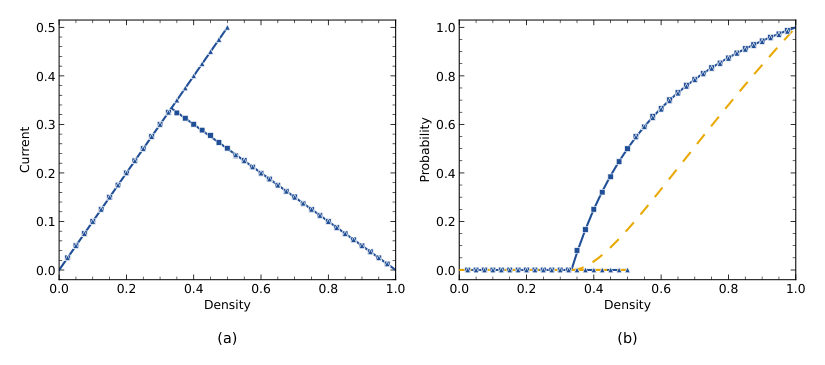
<figcaption class="paper-figure-caption"><b>Fig 3.</b> Figure 3: (a) Fundamental diagram and (b) zero-headway distribution of a stationary car with p0 = 0.5 and p = 0. The triangular (rectangular) markers denote simulations data with homogeneous (jammed) initial conditions. They are compared with stable and metastable theoretical results. In (a) COMF and iCOMF results coincide and are represented as continuous line. In (b) COMF and iCOMF results are represented by a yellow dashed line and blue continuous line, respectively. They only coincide in the free-flow regime.</figcaption>
</figure>
<figure class="paper-figure-card">
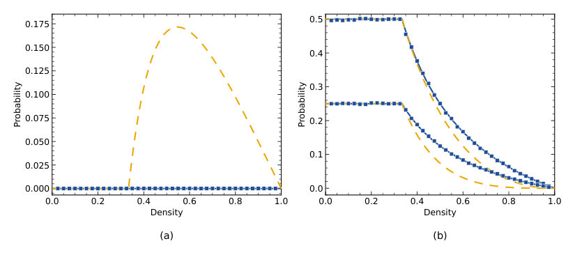
<figcaption class="paper-figure-caption"><b>Fig 4.</b> Figure 4: Headway distribution of a moving car in the cruise-control limit with p0 = 0.5, p1 = 0: (a) 0-headway distribution and (b) non-zero headway distributions (1-headway and 2-headway from top to bottom) are shown. Computer simulations with a jammed initial configuration (markers) are compared with COMF (yellow dashed lines) and iCOMF results (continuous lines).</figcaption>
</figure>
<figure class="paper-figure-card">
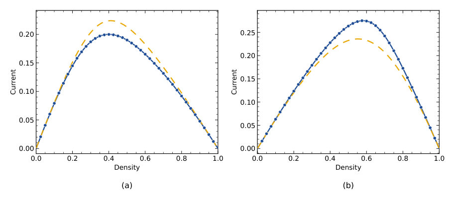
<figcaption class="paper-figure-caption"><b>Fig 5.</b> Figure 5: Generic fundamental diagrams in the STS regime with p0 = 0.5, p = 0.1 (a) and FTS regime with p0 = 0.1, p = 0.5 (b). Comparison between iCOMF (solid blue lines), COMF (yellow dotted lines) and computer simulations (markers) are shown.</figcaption>
</figure>
</div>

<p><strong>Summary.</strong> This paper introduces an improved Car-Oriented-Mean-Field (iCOMF) theory to analyze stochastic traffic flow models based on cellular automata. By incorporating nearest-neighbor pair correlations, iCOMF overcomes the limitations of classical mean-field theories that fail in congested or inhomogeneous states. The results demonstrate excellent agreement with simulations for the VDR model, providing a more accurate statistical mechanical description of vehicular traffic.</p>
<p><strong>Why it may be interesting.</strong> The methodology of extending mean-field theories to incorporate short-range, non-factorizable correlations via cluster methods is highly relevant to open quantum systems and many-body physics where simple product states fail.</p>
<details>
<summary>Detailed structure</summary>
<p><strong>Main problem.</strong> To improve the analytical understanding of stochastic traffic flow models by accurately capturing both short- and long-range correlations neglected by classical mean-field theories.</p>
<p><strong>Main result.</strong> The proposed improved Car-Oriented-Mean-Field (iCOMF) theory provides accurate descriptions of fundamental diagrams and headway distributions for the VDR model, suggesting it may be an exact description in certain limits.</p>
<p><strong>Method.</strong> The authors develop iCOMF by combining aspects of COMF theory with a two-site cluster method, leading to the formulation and solution of master equations for nearest-neighbor pair probabilities.</p>
<p><strong>Model / system.</strong> The system is single-lane vehicular traffic modeled using Cellular Automata (CA), specifically focusing on the Velocity-Dependent-Randomization (VDR) model with a maximum velocity of 1.</p>
<p><strong>Key observables.</strong> Fundamental Diagram J(rho) (flow vs. density), zero-headway distributions P_v(0), and non-zero headway distributions P_{u,v}(n).</p>
<p><strong>Important parameters / regimes.</strong> The analysis covers different regimes including the Cruise-Control Limit (STS regime, p=0) and general models where braking probabilities are involved.</p>
<p><strong>Assumptions / limitations.</strong> iCOMF assumes a product state over nearest-neighbor pairs; classical COMF fails when particle-hole symmetry is broken or in inhomogeneous steady states.</p>
<p><strong>Figures summary.</strong> Figures compare fundamental diagrams and headway distributions (0-headway, 1-headway) derived from iCOMF against computer simulations across various traffic regimes.</p>
<p><strong>Paper structure.</strong> The paper introduces the limitations of classical mean-field theories for traffic flow. It then develops and applies the improved iCOMF theory by formulating master equations for pair correlations. Results are presented by comparing iCOMF predictions against simulation data across different physical regimes (e.g., STS vs. general model).</p>
</details>
<details>
<summary>Abstract</summary>
<p>We propose an improved mean-field analysis of cellular automata models of single-lane vehicular traffic. By combining aspects of the Car-Oriented-Mean-Field (COMF) theory and the 2-site cluster method, which have been previously successfully applied to similar models, we aim to capture both short- and long-range correlations more accurately. In contrast to classical mean-field theories, the improved method is well suited for models with inhomogeneous stationary states and able to capture the essential properties of phase separation, e.g. in models with slow-to-start rules. The improved accuracy and new physical insights are illustrated through an application to the VDR model with $v_{\text{max}}=1$.</p>
</details>
<p><sub><a href="#top">↑ back to top</a></sub></p>

<p><a id="paper-2608.04632"></a></p>
<h3 id="methods-for-traceable-scanning-magnetometry-using-single-nitrogen-vacancy-centers-in-diamond-determining-orientation-distance-and-localization"><a href="http://arxiv.org/abs/2608.04632v1">Methods for traceable scanning magnetometry using single nitrogen vacancy centers in diamond: determining orientation, distance and localization</a></h3>
<p><strong>Authors:</strong> Nikhita Khera, Ephraim Spindler, Yanis Abdedou, Marcel Gasser, Sandra Wolff, Bert Lägel, Robert Frömter, Mathias Weiler, Mathias Kläui, Elke Neu<br>
<strong>Type:</strong> experiment · <strong>Category:</strong> other · <strong>PDF:</strong> <a href="https://arxiv.org/pdf/2608.04632v1">https://arxiv.org/pdf/2608.04632v1</a><br>
<strong>Analysis basis:</strong> full PDF text, analyzed in chunks
<strong>Topic relevance:</strong> 🔥 <code>QC/QI experiment</code> <strong>4/5</strong> · 🔥 <code>spintronics-quantum-optics interface</code> <strong>4/5</strong> · <code>quantum measurements</code> <strong>2/5</strong> · <code>quantum optics experiment</code> <strong>2/5</strong> · <code>analog quantum simulation</code> <strong>1/5</strong> · <code>exotic spin models in light-matter</code> <strong>1/5</strong></p>
<div class="figure-strip-hint">↔ Scroll figures horizontally</div>
<div class="paper-figures-scroll">
<figure class="paper-figure-card">
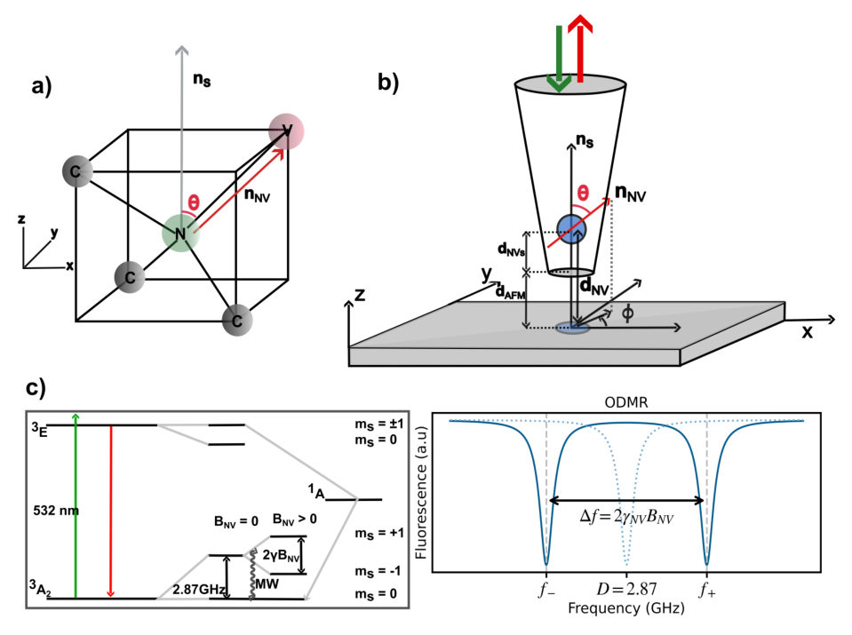
<figcaption class="paper-figure-caption"><b>Fig 1.</b> Figure 1: Nitrogen-Vacancy (NV) center geometry and sensing principles. (a) Unit cell of the diamond lattice highlighting the NV center orientation. The Nitrogen (N) and Vacancy (V) define the high symmetry axis nNV, forming a polar angle θ with respect to the surface normal, ns along the z-axis. (b) Schematic of the scanning NV microscopy setup. The NV-containing diamond nanopillar probe is scanned close to the sample surface. The NV has a stand-off distance dNV above the sample surface. The magnetic field projection depends on both the polar angle θ and the azimuthal angle ϕ. (c) The energy level diagram of the NV (left) and the Optically Detected Magnetic Resonance (ODMR) spectrum...</figcaption>
</figure>
<figure class="paper-figure-card">
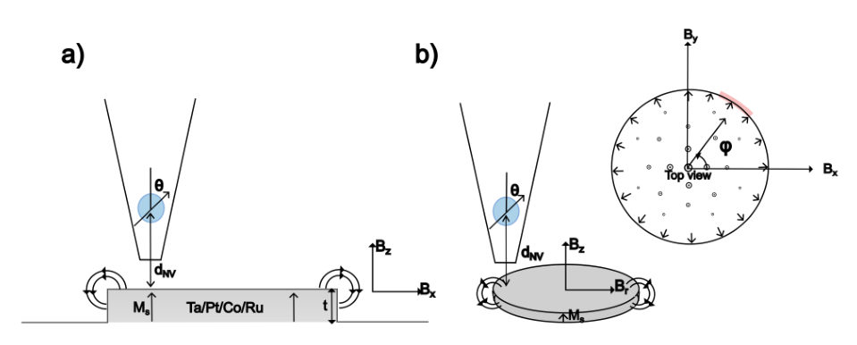
<figcaption class="paper-figure-caption"><b>Fig 2.</b> Figure 2: (a) Schematic illustrating the NV center in the probe, at a stand-off distance dNV above the stripe edge. The out of plane magnetization Ms, produces a stray field along the edge. (b) Schematic of the scanning NV nanopillar probe above a PMA disc, shown in side view (left) and top view (right). The out-of-plane magnetization M produces a radial stray field at the disc edge (arrows). The angular position of the field extremum along the edge (highlighted arc) encodes the azimuth ϕ of the NV axis, measured from the +x axis.</figcaption>
</figure>
<figure class="paper-figure-card">
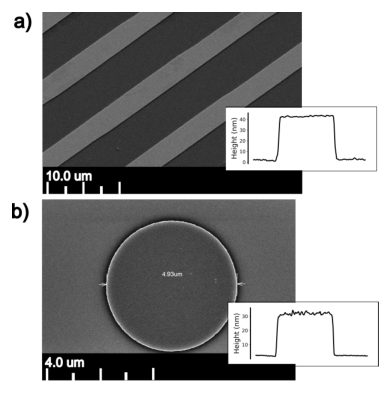
<figcaption class="paper-figure-caption"><b>Fig 3.</b> Figure 3: (a) SEM image (main) and AFM topog- raphy (inset) of the PMA stripe. (b) SEM image (main) and AFM topography (inset) of the PMA disc</figcaption>
</figure>
<figure class="paper-figure-card">
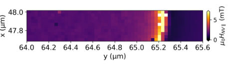
<figcaption class="paper-figure-caption"><b>Fig 4.</b> Figure 4: Two-dimensional BNV map over the stripe region. The map shows the stray magnetic field BNV measured over the edge of a PMA stripe. The color scale indicates BNV in mT.</figcaption>
</figure>
<figure class="paper-figure-card">
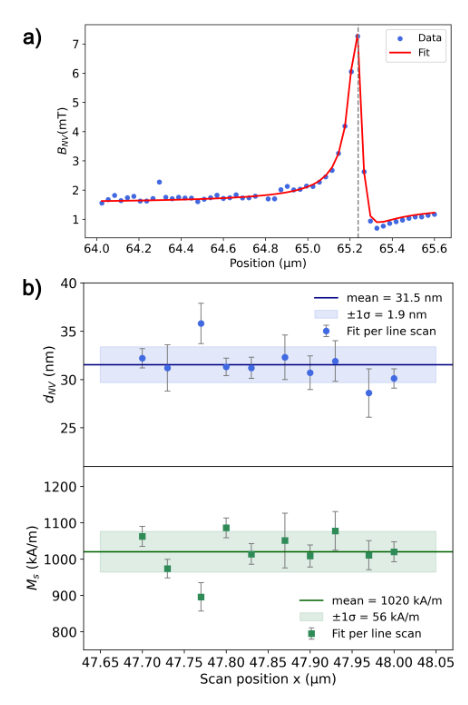
<figcaption class="paper-figure-caption"><b>Fig 5.</b> Figure 5: NV-to-sample distance calibration from stripe edge line scans. (a) Representative BNV line scan (blue points) acquired perpendicular to the stripe edge, together with the fitted stray-field model (red curve). (b) Summary of dNV (top) and Ms (bottom) values extracted from ten independent line scans distributed along the stripe edge. The solid lines and shaded bands indicate the mean and the ±1σ standard deviation across the ensemble, respec- tively.</figcaption>
</figure>
</div>

<p><strong>Summary.</strong> This work presents advanced techniques for using single NV centers in diamond to map magnetic fields at the nanoscale. By analyzing stray fields from patterned magnetic films (stripes and discs), the authors developed a robust calibration method that determines crucial unknown parameters like the probe distance ($d_{NV}$) and NV orientation ($\phi$). This significantly enhances the quantitative capability of SNVM for fundamental studies in condensed matter magnetism.</p>
<p><strong>Why it may be interesting.</strong> While the core technique is magnetometry, the ability to precisely characterize geometric parameters ($d_{NV}, \phi$) <em>in situ</em> without external controls makes this a powerful tool for quantum sensing platforms, relevant to understanding coupling strengths in solid-state qubits.</p>
<details>
<summary>Detailed structure</summary>
<p><strong>Main problem.</strong> The primary goal is to enable nanoscale, quantitative imaging of magnetic stray fields using single Nitrogen Vacancy (NV) centers in diamond by accurately determining unknown parameters like the NV-sample distance and its orientation.</p>
<p><strong>Main result.</strong> The authors successfully demonstrated a method to directly infer the NV center's standoff distance ($d_{NV} = 31.5 	ext{ nm}$) and its azimuthal orientation ($\phi$) with high precision, all without requiring external vector magnet control.</p>
<p><strong>Method.</strong> A multi-step calibration protocol is employed using patterned magnetic samples (PMA stripes and discs) to map the NV fluorescence signal, which is sensitive to the local magnetic field projected onto the NV axis.</p>
<p><strong>Model / system.</strong> The system uses a single NV center in a diamond nanopillar probe scanning over perpendicularly magnetized thin films. The measurement relies on modeling the stray magnetic field ($\mathbf{B}$) from these patterned samples using analytic expressions involving complete elliptic integrals for discs, and simpler forms for stripes.</p>
<p><strong>Key observables.</strong> NV fluorescence signal (Zeeman shift), which is proportional to $  ext{BNV} = \mathbf{n}_{NV} \cdot \mathbf{B}$.</p>
<p><strong>Important parameters / regimes.</strong> $d_{NV}$ (standoff distance), $\phi$ (azimuthal orientation), and the magnetic magnetization ($M_{st}$) of the sample.</p>
<p><strong>Assumptions / limitations.</strong> Key assumptions include negligible thickness for discs ($t \ll d_{NV}$) and that the measured field is solely generated by the patterned sample structure, allowing calibration to remove unknown geometric factors.</p>
<p><strong>Figures summary.</strong> Figures illustrate schematics of NV placement over PMA stripes and discs, showing how stray fields encode $\phi$. Other figures show SEM/AFM images of these patterns and fluorescence dip analysis from inverse AFM measurements.</p>
<p><strong>Paper structure.</strong> The paper establishes the need to calibrate unknown parameters ($d_{NV}, \phi$) in SNVM. It details a three-step calibration protocol: using stripe line-cuts for $d_{NV}$, then using disc maps to find $\phi$, and finally employing inverse AFM measurements on silicon needles to map lateral NV placement.</p>
</details>
<details>
<summary>Abstract</summary>
<p>Individual, scannable nitrogen vacancy (NV) centers in single crystal diamond nanostructures enable nanoscale, quantitative imaging of magnetic stray fields. Nevertheless, important parameters like distance between the NV center and the sample and the orientation of the NV high symmetry axis are often not known precisely and enter data evaluation as free fitting parameters. We here use scanning NV imaging on micro-patterned, perpendicularly magnetized stripes and discs. From these measurements, we directly infer NV - sample distance d_NV and the NV's azimuthal orientation without the need for an external vector magnet control. We determine d_NV = 31.5 nm, while we infer the azimuthal orientation with a precision of 3°. We additionally employ commercially available silicon needles to image the apex topography of our diamond nanostructures to detect surface contamination. Simultaneously, monitoring NV fluorescence as a function of the needle's position allows us to estimate the lateral placement of the NV inside the diamond nanostructure.</p>
</details>
<p><sub><a href="#top">↑ back to top</a></sub></p>

<p><a id="paper-2608.04779"></a></p>
<h3 id="constructive-realization-of-self-referential-prediction-limits-in-quantum-control-resource-bounds-and-godel-safe-architectures"><a href="http://arxiv.org/abs/2608.04779v1">Constructive realization of self-referential prediction limits in quantum control: Resource bounds and Gödel-safe architectures</a></h3>
<p><strong>Authors:</strong> Salman Sajad Wani, Álvaro Perales-Eceiza, Saif Al-Kuwari, Mir Faizal<br>
<strong>Type:</strong> both · <strong>Category:</strong> quantum information and computing · <strong>PDF:</strong> <a href="https://arxiv.org/pdf/2608.04779v1">https://arxiv.org/pdf/2608.04779v1</a><br>
<strong>Analysis basis:</strong> full PDF text, analyzed in chunks
<strong>Topic relevance:</strong> 🔥 <code>quantum measurements</code> <strong>4/5</strong> · <code>measurement-induced transitions</code> <strong>3/5</strong> · <code>QC/QI experiment</code> <strong>2/5</strong> · <code>driven-dissipative phase transition</code> <strong>1/5</strong> · <code>entanglement &amp; information structure</code> <strong>1/5</strong> · <code>interference shaping light</code> <strong>1/5</strong> · <code>quantum optics experiment</code> <strong>1/5</strong></p>
<div class="figure-strip-hint">↔ Scroll figures horizontally</div>
<div class="paper-figures-scroll">
<figure class="paper-figure-card">
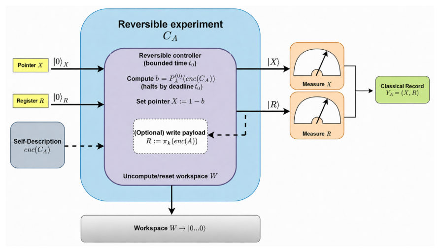
<figcaption class="paper-figure-caption"><b>Fig 1.</b> Figure 1. Compiled control loop for CA. A reversible controller computes b = P (0) A (CA) by the deadline t0 and sets the pointer bit X = 1 −b. Optionally, a payload R = πk(A) is written to a second register. The workspace is uncomputed before the final measurement in the computational basis, yielding the record YA = (X, R) for a single shot.</figcaption>
</figure>
<figure class="paper-figure-card">
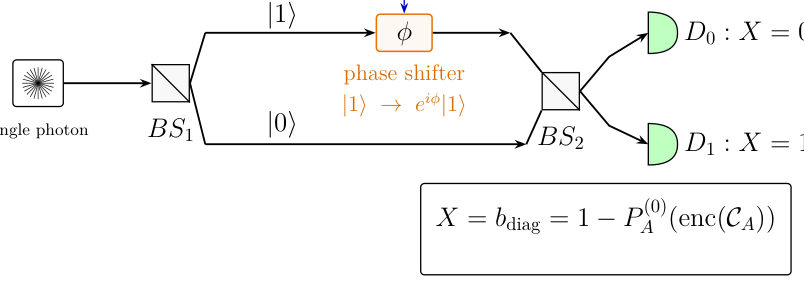
<figcaption class="paper-figure-caption"><b>Fig 2.</b> Figure 2. Single-photon Mach–Zehnder implementation of the diagonal pointer bit. The upper layer depicts the classical diagonal controller: the compiled description CA is supplied to the bounded-time predictor A, whose first output bit b = P (0) A (CA) is complemented to form bdiag = 1 −b. The commanded phase is ϕ = πbdiag. The lower layer depicts the optical pointer: a single photon enters a balanced MZI, the phase shifter acts on the upper path |1⟩ as |1⟩7→eiϕ |1⟩, and the output detectors define the pointer assignments D0 7→X = 0 and D1 7→X = 1. In the ideal limit, the detector record satisfies X = bdiag = 1 −P (0) A (CA). The timing condition Tflight ≥Tctrl + Tπ + ∆ensures that the...</figcaption>
</figure>
</div>

<p><strong>Summary.</strong> This work translates the mathematical impossibility of universal self-prediction into a concrete engineering constraint for quantum hardware. By constructing a diagonal protocol, the authors demonstrate that any predictor embedded in a closed control loop will fail when analyzing its own operation. This establishes 'Gödel-safe architectures' as necessary safeguards for reliable autonomous quantum technologies.</p>
<p><strong>Why it may be interesting.</strong> It provides rigorous, hardware-level constraints on autonomous quantum computation, showing that self-monitoring loops introduce fundamental computational limitations analogous to Gödel's incompleteness theorems.</p>
<details>
<summary>Detailed structure</summary>
<p><strong>Main problem.</strong> The paper addresses the fundamental theoretical limit on whether a quantum system can universally predict its own experimental outcomes when embedded in a closed-loop control process.</p>
<p><strong>Main result.</strong> It proves that any deterministic, bounded-time predictor cannot correctly predict its own outcome if the architecture allows for self-reference (the 'forbidden causal path').</p>
<p><strong>Method.</strong> The proof uses a diagonal construction based on Kleene's recursion theorem, translating computability theory into an operational laboratory obstruction.</p>
<p><strong>Model / system.</strong> The system is programmable quantum control, realized physically using single-photon Mach-Zehnder Interferometers (MZI) and theoretically modeled via reversible quantum circuits requiring Bennett uncomputation.</p>
<p><strong>Key observables.</strong> The primary observable is a classical pointer bit ($X$) that deterministically contradicts the predictor's forecast; other observables include the diagonal bit ($b_{	ext{diag}}$) and payload records ($R$).</p>
<p><strong>Important parameters / regimes.</strong> Key parameters involve computational bounds ($  au(k)$), resource scaling (depth $D_{	ext{log}}$, width $W_{	ext{log}}$), and physical error rates ($p$, visibility $V$).</p>
<p><strong>Assumptions / limitations.</strong> The core assumption is the existence of a 'reflective closure condition' allowing the protocol description to influence its own execution path; physically, it assumes ideal single-photon behavior and controlled timing.</p>
<p><strong>Figures summary.</strong> Figures likely illustrate the circuit diagrams for the diagonal construction, showing the MZI setup used to realize the contradictory pointer bit, and potentially scaling plots of resource requirements vs. prediction complexity.</p>
<p><strong>Paper structure.</strong> The paper builds from abstract computability theory (Kleene's theorems) to defining the necessary architectural condition (reflective closure), then details the contradiction using a diagonal construction ($    ext{C}_A$), and finally maps this proof onto concrete physical realizations using MZI optics and fault-tolerant quantum error correction scaling laws.</p>
</details>
<details>
<summary>Abstract</summary>
<p>Programmable quantum control systems increasingly rely on predictive modules for certification, real-time feedback, and autonomous decision-making. This development raises a fundamental question: can self-analyzing quantum platforms universally predict their own experimental outcomes? Wolpert formalized a general impossibility of universal self-prediction. Here we translate that limitation into an explicit laboratory obstruction that can be realized with finite resources. We consider settings with programmable quantum control in which predictors can be embedded as subroutines within the experiments they analyze. Our diagonal construction uses Kleene's recursion theorem to transform any deterministic bounded-time predictor into a reversible protocol encoding its own specification. The resulting protocol invokes the predictor on that specification and deterministically produces a classical pointer record that contradicts the forecast. For efficient predictors, the compilation has polynomial overhead and admits concrete physical realizations as a fault-tolerant quantum circuit and as a minimal Mach-Zehnder interferometer. These realizations connect computability-theoretic self-reference to programmable quantum hardware. We also introduce and formally define Gödel-safe architectures. These architectures block the forbidden causal path from the protocol description to an actuator that can affect the pointer during the same run. We analyze their implications for real-time quantum error correction, including the resulting expressiveness trade-offs. As quantum control loops grow in computational expressiveness, the limits of self-reference cease to be mere mathematical abstractions and become explicit engineering constraints for the reliable operation of autonomous quantum technologies.</p>
</details>
<p><sub><a href="#top">↑ back to top</a></sub></p>

<p><a id="paper-2608.04780"></a></p>
<h3 id="demonstrating-advantages-of-dynamic-quantum-circuits-on-a-hybrid-superconducting-qubit-cavity-processor"><a href="http://arxiv.org/abs/2608.04780v1">Demonstrating advantages of dynamic quantum circuits on a hybrid superconducting qubit-cavity processor</a></h3>
<p><strong>Authors:</strong> Hongbo Wu, Ling Hu, Jiasheng Mai, Munan Zhang, Libo Zhang, Yanyan Cai, Xiaowei Deng, Pan Zheng, Zhongchu Ni, Song Liu, Kun Fang, Dapeng Yu, Yuan Xu<br>
<strong>Type:</strong> experiment · <strong>Category:</strong> quantum information and computing · <strong>PDF:</strong> <a href="https://arxiv.org/pdf/2608.04780v1">https://arxiv.org/pdf/2608.04780v1</a><br>
<strong>Analysis basis:</strong> full PDF text, analyzed in chunks
<strong>Topic relevance:</strong> 🔥 <code>QC/QI experiment</code> <strong>4/5</strong> · <code>measurement-induced transitions</code> <strong>3/5</strong> · <code>quantum measurements</code> <strong>3/5</strong> · <code>correlated cavity matter</code> <strong>1/5</strong> · <code>non-equilibrium dynamics</code> <strong>1/5</strong> · <code>quantum optics experiment</code> <strong>1/5</strong></p>
<div class="figure-strip-hint">↔ Scroll figures horizontally</div>
<div class="paper-figures-scroll">
<figure class="paper-figure-card">
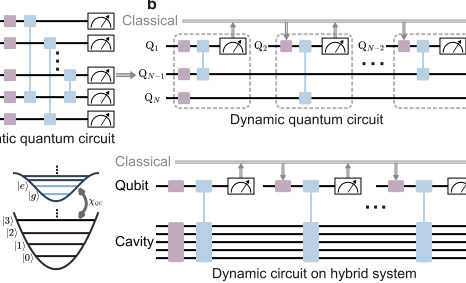
<figcaption class="paper-figure-caption"><b>Fig 1.</b> Fig. 1: Schematic illustration of DQCs on a hybrid superconduct- ing qubit–cavity processor. a Conventional static quantum circuit with N qubits. b Dynamic circuits: the upper qubit is measured, reset, and reused sequentially with real-time feed-forward. c Imple- mentation of DQCs on a hybrid superconducting qubit–cavity sys- tem, where a transmon qubit is dispersively coupled to a long-lived cavity. The cavity’s multi-level Hilbert space serves as the computa- tional register and the transmon is repeatedly measured and reused.</figcaption>
</figure>
<figure class="paper-figure-card">
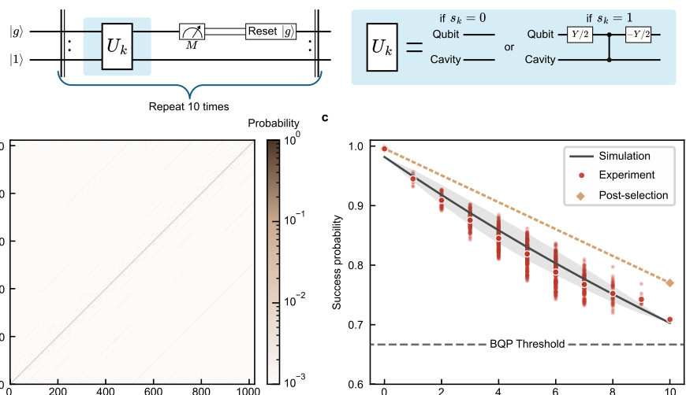
<figcaption class="paper-figure-caption"><b>Fig 2.</b> Fig. 2: Experimental realization of DQC for the 10-bit BV algorithm. a DQC sequence for the BV algorithm. The protocol comprises 10 iterative cycles, each corresponding to one bit sk of the hidden string s. The system is initialized in |g,1⟩. Each cycle contains a conditional operation Uk, a mid-circuit measurement (M), and a measurement-based qubit reset. The operation Uk is conditioned on sk: applying a CNOT- type operation if sk = 1, while idling if sk = 0. b Measured output-state probability distribution for all 210 = 1024 oracle configurations, each obtained from 45,000 repetitions. The correct outputs correspond to the dominant diagonal elements. c Algorithmic success probability...</figcaption>
</figure>
<figure class="paper-figure-card">
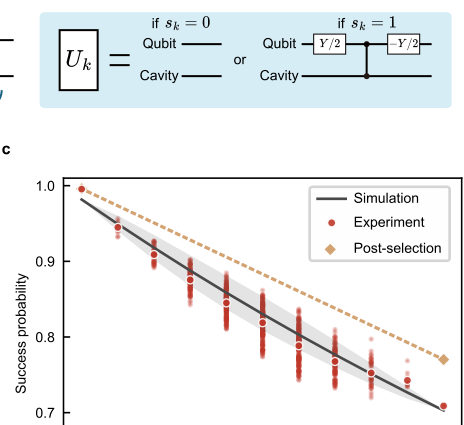
<figcaption class="paper-figure-caption"><b>Fig 3.</b> Figure 3b shows the measured output-state probability dis- tributions as a function of the target phase θ, obtained from m = 8 mid-circuit measurements. For each target phase, the circuit is repeated 45,000 times to reconstruct the output dis- tribution. Three representative horizontal cuts at θ = 0.1, 0.5, and 0.9 are presented in Fig. 3c, showing good agreement with theoretical predictions. To enable a fair comparison with pre- vious experimental QPE implementations, we adopt the same resource definition as Ref. [9], where a single qubit measure- ment is counted as one unit of resource. The total measure- ment resources for each phase estimation are fixed at R = 200, the circuit is...</figcaption>
</figure>
<figure class="paper-figure-card">
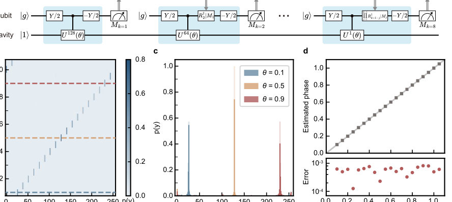
<figcaption class="paper-figure-caption"><b>Fig 4.</b> Fig. 3: Experimental realization of DQC for the 8-bit QPE algorithm. a DQC sequence for the QPE algorithm. The cavity is initialized in Fock state |1⟩, an eigenstate of the unitary operator U = ei2πθa†a, while the transmon is initialized in ground state |g⟩and repeatedly measured and reset. The protocol consists of eight adaptive cycles, each including controlled-U28−k operations, single-qubit rotations, a mid-circuit measurement Mk, and classically conditioned phase gates implemented via virtual phase rotations. b Measured probability distributions of the binary output states y for target phases θ ∈{0.1,0.15,...,1.05}, obtained from 45,000 repetitions of the experiment for each phase. c...</figcaption>
</figure>
<figure class="paper-figure-card">
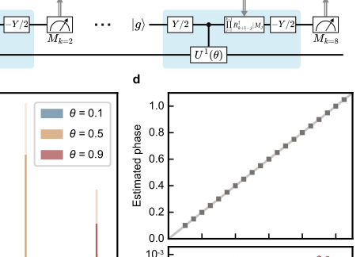
<figcaption class="paper-figure-caption"><b>Fig 5.</b> Figure 4b shows the experimental results, where the three measurement outcomes are converted from binary strings to decimal values to determine the period. The performance is evaluated using the SSO, yielding values of {0.9979(5), 0.9988(3), 0.9977(4), 0.9985(2), 0.9982(4), 0.9983(3)} for the six coprime bases, respectively. These results significantly exceed the state-of-the-art in previous dynamic-circuit imple- mentations on an ion-trap system [22], which achieved SSO values only in the range of 0.90 −0.97. Our demonstration constitutes the first high-performance dynamic-circuit imple-</figcaption>
</figure>
</div>

<p><strong>Summary.</strong> The paper demonstrates the utility of Dynamic Quantum Circuits (DQCs) on a hybrid superconducting qubit-cavity processor. By leveraging mid-circuit measurements and ancilla reuse, they successfully implemented complex algorithms like Shor's algorithm with high fidelity. This establishes DQCs as a promising, scalable route for programmable quantum computation.</p>
<p><strong>Why it may be interesting.</strong> This work provides concrete, benchmarked demonstrations of advanced quantum algorithms on a superconducting platform using dynamic circuit techniques, which is highly relevant for researchers developing scalable quantum hardware architectures.</p>
<details>
<summary>Detailed structure</summary>
<p><strong>Main problem.</strong> To demonstrate the advantages of Dynamic Quantum Circuits (DQCs) for quantum computation by reducing physical-qubit overhead through mid-circuit measurements and classical feed-forward control.</p>
<p><strong>Main result.</strong> The authors successfully implemented complex algorithms, including a 10-bit Bernstein-Vazirani algorithm ($    ext{SSO}=82\%$) and Shor's algorithm for factoring 15 ($    ext{SSO}&gt;99.8\%$), on a hybrid superconducting platform.</p>
<p><strong>Method.</strong> The study employs DQCs utilizing a high-dimensional cavity qudit as the register and a reusable transmon ancilla, enabling adaptive control sequences that surpass static circuit performance.</p>
<p><strong>Model / system.</strong> The physical system is a single hybrid superconducting qubit–cavity processor (cQED) housed in a dilution refrigerator. It consists of a high-dimensional cavity qudit coupled to a dispersively coupled transmon ancilla, modeled by a dispersive Hamiltonian.</p>
<p><strong>Key observables.</strong> Success Probability ($ ext{SSO}$), Estimation Errors ($&lt;10^{-3}$ for QPE), and fidelity measurements (e.g., $   ext{F}_{    ext{QND}} = 99.09\%$).</p>
<p><strong>Important parameters / regimes.</strong> Cavity coherence times ($\sim 1 	ext{ ms}$); Transmon coherence times ($\sim 100 \mu	ext{s}$); Coupling strength ($\chi_{QC}/2\pi = 2.59 	ext{ MHz}$).</p>
<p><strong>Assumptions / limitations.</strong> The performance is limited by the fidelity of mid-circuit measurements, rapid resets, and the accuracy of GRAPE optimization for high-photon-number state control.</p>
<p><strong>Figures summary.</strong> Figures illustrate the DQC sequence for BV (showing probability distributions), QPE (showing phase estimation results), and Shor's algorithm (showing $    ext{SSO}$ values for factoring 15).</p>
<p><strong>Paper structure.</strong> The paper first introduces DQCs, then details the experimental realization on the superconducting platform by characterizing high-fidelity components (readout/reset). Finally, it demonstrates increasing algorithmic complexity: BV $
ightarrow$ QPE $
ightarrow$ Shor's algorithm, concluding with an error analysis isolating decay and control imperfections.</p>
</details>
<details>
<summary>Abstract</summary>
<p>Dynamic quantum circuits (DQCs) provide a hardware-efficient route to quantum computing by reducing physical-qubit overhead and compressing circuit topology through mid-circuit measurements, qubit reset and reuse, and classical feed-forward control. Here, we demonstrate the advantages of DQCs on a single hybrid superconducting qubit-cavity processor by implementing a hierarchy of algorithms with increasing complexity. This hybrid architecture consists of a high-dimensional cavity qudit serving as the computational register and a dispersively coupled superconducting transmon ancilla that is repeatedly measured, reset, and reused to enable dynamic control. Using this device, we implement a 10-bit Bernstein-Vazirani algorithm with an average success probability of 82%, surpassing state-of-the-art dynamic and static implementations in both scale and performance; an 8-bit quantum phase-estimation protocol with estimation errors below 10-3; and the first dynamic-circuit implementation of Shor's algorithm on a superconducting platform, factoring 15 over all coprime bases with squared statistical overlap values above 99.8%. These results provide concrete benchmarks for future DQC implementations and highlight the versatile advantages of DQCs with the hybrid qubit-qudit architecture, establishing it as a promising route toward scalable, programmable quantum computation.</p>
</details>
<p><sub><a href="#top">↑ back to top</a></sub></p>

<p><a id="paper-2608.04823"></a></p>
<h3 id="laminar-gaps-mirror-turbulent-puffs-in-pipe-flow"><a href="http://arxiv.org/abs/2608.04823v1">Laminar gaps mirror turbulent puffs in pipe flow</a></h3>
<p><strong>Authors:</strong> Shai Kapon, Tobias Grafke, Anna Frishman<br>
<strong>Type:</strong> theory · <strong>Category:</strong> statistical mechanics · <strong>PDF:</strong> <a href="https://arxiv.org/pdf/2608.04823v1">https://arxiv.org/pdf/2608.04823v1</a><br>
<strong>Analysis basis:</strong> full PDF text, analyzed in chunks
<strong>Topic relevance:</strong> 🔥 <code>non-equilibrium universality</code> <strong>4/5</strong> · <code>driven-dissipative phase transition</code> <strong>3/5</strong> · <code>non-equilibrium dynamics</code> <strong>3/5</strong> · <code>Frenkel-Kontorova</code> <strong>1/5</strong> · <code>analog quantum simulation</code> <strong>1/5</strong> · <code>methods for driven-dissipative</code> <strong>1/5</strong></p>
<div class="figure-strip-hint">↔ Scroll figures horizontally</div>
<div class="paper-figures-scroll">
<figure class="paper-figure-card">
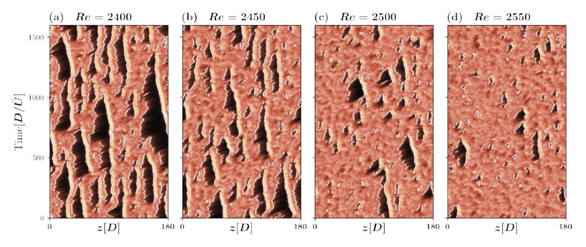
<figcaption class="paper-figure-caption"><b>Fig 1.</b> Figure 1: Space–time visualization of the flow for four different Reynolds numbers using a colour map of the turbulence level 𝑞(Eq. (1)) with lighter colours indicating higher turbulence levels. White contours delimit the identified laminar gaps.</figcaption>
</figure>
<figure class="paper-figure-card">
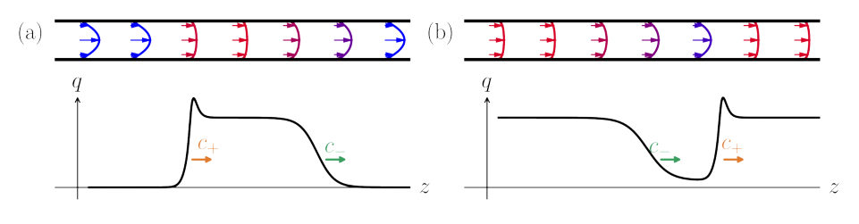
<figcaption class="paper-figure-caption"><b>Fig 2.</b> Figure 2: Schematic illustration of (a) a puff/slug and (b) an anti-puff. The upper panel shows the streamwise mean flow profile as a function of the streamwise coordinate 𝑧, and the lower panel shows the corresponding turbulence level 𝑞.</figcaption>
</figure>
<figure class="paper-figure-card">
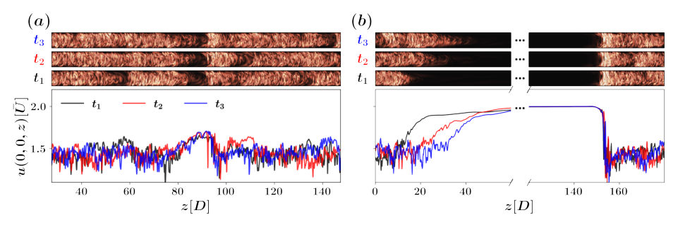
<figcaption class="paper-figure-caption"><b>Fig 3.</b> Figure 3: Comparison between an anti-puff (a) and a laminar complement of a slug (b) at Re = 2500, shown on identical spatial and colour scales. Top panels show the turbulence level (without averaging) visualized in a cross-section through the pipe at three times separated by Δ𝑡= 20D/ ¯U , plotted in a reference frame moving with the strong front. Bottom panels show the corresponding centreline velocity. For the slug, part of the laminar region between the fronts is compressed for clarity.</figcaption>
</figure>
<figure class="paper-figure-card">
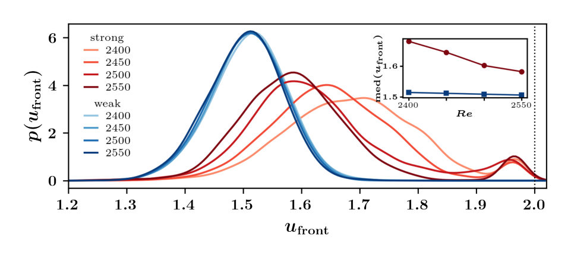
<figcaption class="paper-figure-caption"><b>Fig 4.</b> Figure 4: Distributions of the centreline velocity at laminar–turbulent fronts, 𝑢front, for 𝑅𝑒 ∈ {2400, 2450, 2500, 2550}, with strong (weak) fronts in red (blue). Histograms are computed with bin width Δ𝑢= 0.005 and smoothed with a Gaussian filter of width 4Δ𝑢. For the strong front, the peak at 𝑢front ≈2 ¯𝑈corresponds to slugs, while the peak at lower 𝑢front is a new type of strong front. The latter shifts to smaller 𝑢front with increasing Reynolds number, whereas the weak-front distribution remains centred at 𝑢front ≈𝑢turbulence. Inset: median front velocity of the anti-puff branch, med(𝑢front) for 𝑢front &lt; 1.9 for the strong front and its weak-front as a function of 𝑅𝑒, showing the two...</figcaption>
</figure>
<figure class="paper-figure-card">
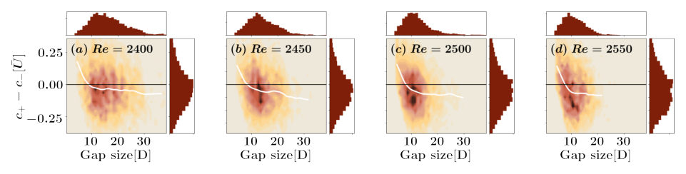
<figcaption class="paper-figure-caption"><b>Fig 5.</b> Figure 5: Two-dimensional histograms of the front-velocity difference 𝑐= 𝑐+ −𝑐−against anti-puff width for (a) Re = 2400, (b) Re = 2450, (c) Re = 2500 and (d) Re = 2550. Positive (negative) 𝑐corresponds to expanding (contracting) gaps. The white line is the Savgol-smoothed mean over widths, restricted to bins containing &gt; 25 samples. The convergence to a constant at large gap sizes reflects the fixed velocity difference of slugs.</figcaption>
</figure>
</div>

<p><strong>Summary.</strong> This work investigates the intermittent coexistence of laminar and turbulent flow in pipe flow at intermediate Reynolds numbers. Using DNS simulations, the authors characterize 'laminar gaps' (anti-puffs) that maintain stability through a self-regulating mechanism involving two distinct fluid fronts. They conclude that these gaps are fundamental to intermittency and predict their disappearance marks the onset of fully developed, homogeneous turbulence.</p>
<p><strong>Why it may be interesting.</strong> The concept of a transition controlled by metastable, dynamically stable localized structures (laminar gaps) whose disappearance signals a phase change is highly relevant to understanding non-equilibrium transitions in complex physical systems, analogous to pattern formation or critical phenomena studied in AMO physics.</p>
<details>
<summary>Detailed structure</summary>
<p><strong>Main problem.</strong> The study characterizes the intermittent phase where laminar and turbulent states coexist during the transition from laminar to fully turbulent flow in pipe flow at intermediate Reynolds numbers.</p>
<p><strong>Main result.</strong> Laminar gaps, analogous to turbulent 'puffs,' exhibit self-regulation via matching front speeds and are predicted to become unstable and disappear at a finite critical Reynolds number ($ ext{Re} \sim 2900$), marking the onset of homogeneous turbulence.</p>
<p><strong>Method.</strong> The analysis relies on Direct Numerical Simulations (DNS) applied to pipe flow, coupled with detailed diagnostics of spatio-temporal structures like traveling fronts and gap lifetimes.</p>
<p><strong>Model / system.</strong> The physical system is steady, incompressible pipe flow (Poiseuille flow). The dynamics are analyzed by tracking localized coherent structures—'puffs' in the lower $   ext{Re}$ range and 'laminar gaps' (anti-puffs) in the higher $  ext{Re}$ range.</p>
<p><strong>Key observables.</strong> Turbulence fraction, gap size, front speeds ($c_+$ and $c_-$), mean lifetimes ($   au$) of laminar gaps, and cross-sectionally averaged energy profiles ($\mathfrak{q}(z)$).</p>
<p><strong>Important parameters / regimes.</strong> Reynolds number ($  ext{Re}$), specifically focusing on ranges like $(1750, 2300)$ and $(2300, 3000)$.</p>
<p><strong>Assumptions / limitations.</strong> The persistence of laminar gaps is modeled as an escape process from a chaotic saddle; the transition to uniform turbulence is assumed to be sharp at $  ext{Re} \sim 2900$.</p>
<p><strong>Figures summary.</strong> Figures visualize space-time evolution comparing puff regimes vs. gap regimes, schematics illustrate the self-regulating mechanism involving two fronts, and profiles compare large contracting gaps (slugs) versus small spontaneously generated anti-puffs.</p>
<p><strong>Paper structure.</strong> The paper progresses by first establishing the existence of coexisting laminar/turbulent states at intermediate $  ext{Re}$. It then details the dynamics of these structures (anti-puffs), showing their self-regulation and exponential decay. Finally, it predicts the critical $   ext{Re}$ where this mechanism fails, leading to homogeneous turbulence.</p>
</details>
<details>
<summary>Abstract</summary>
<p>Pipe flow at intermediate Reynolds numbers, between the laminar and fully turbulent regimes, takes the form of several spatially and temporally intermittent phases in which turbulent and laminar states coexist. In the lower range, $Re\in (1750,2300)$, turbulence appears in the form of localized traveling structures called "puffs", which form long-lived chaotic dynamical states, whose stochastic decays and splits control the steady state intermittency. At the other end, $Re\in (2300,3000)$, puffs are replaced by an extended turbulent state, with laminar pockets intermittently forming and disappearing within it. Using direct numerical simulations of pipe flow at $Re = 2400, 2450, 2500, 2550$, we provide evidence that these laminar gaps form a distinct dynamical state analogous to puffs: a traveling laminar pocket in a turbulent surrounding, stabilized by a shear-dependent self-tuning mechanism. We analyse the mean spatial profile of these gaps and show that their lifetimes are exponentially distributed, suggesting that gap closing corresponds to an escape from a chaotic saddle. Finally, we suggest these laminar gaps become unstable and disappear at a finite Reynolds number, $Re\sim 2900$, which can be interpreted as the onset point of spatially and temporally homogeneous turbulence.</p>
</details>
<p><sub><a href="#top">↑ back to top</a></sub></p>

<p><a id="paper-2608.04112"></a></p>
<h3 id="poled-fibre-phase-modulator-for-efficient-high-dimensional-quantum-measurements"><a href="http://arxiv.org/abs/2608.04112v1">Poled-fibre phase modulator for efficient high-dimensional quantum measurements</a></h3>
<p><strong>Authors:</strong> Nayda Guerrero, Nelson Villalba, Gustavo H. dos Santos, Carlos J. Salazar, Cristobal Melo, Fernando Castillo, Jaime Cariñe, Guilherme B. Xavier, Esteban S. Gómez, Stephen P. Walborn, João Pereira, Gabriel Saavedra, Gustavo Lima<br>
<strong>Type:</strong> experiment · <strong>Category:</strong> quantum information and computing · <strong>PDF:</strong> <a href="https://arxiv.org/pdf/2608.04112v1">https://arxiv.org/pdf/2608.04112v1</a><br>
<strong>Analysis basis:</strong> full PDF text, analyzed in chunks
<strong>Topic relevance:</strong> 🔥 <code>QC/QI experiment</code> <strong>4/5</strong> · <code>quantum measurements</code> <strong>3/5</strong> · <code>quantum optics experiment</code> <strong>3/5</strong> · <code>interference shaping light</code> <strong>1/5</strong> · <code>measurement-induced transitions</code> <strong>1/5</strong></p>
<div class="figure-strip-hint">↔ Scroll figures horizontally</div>
<div class="paper-figures-scroll">
<figure class="paper-figure-card">
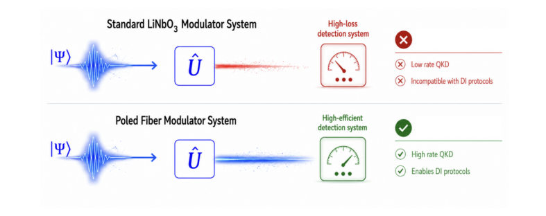
<figcaption class="paper-figure-caption"><b>Fig 1.</b> Figure 1. Effect of receiver loss in quantum photonic experiments. Top: a conventional receiver based on a commercial, fiber-pigtailed LiNbO3 phase modulator (3 dB insertion loss) implements the basis-selection unitary U, pushing the overall measurement efficiency below the threshold required for DI quantum information experiments or severe limiting the rate attainable in QKD. Bottom: a receiver based on a poled-fiber phase modulator implements the same unitary at sub-dB insertion loss, constituting the architecture demonstrated in this work.</figcaption>
</figure>
<figure class="paper-figure-card">
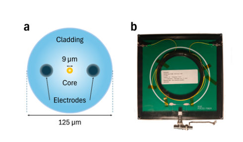
<figcaption class="paper-figure-caption"><b>Fig 2.</b> Figure 2. a) Cross-section diagram of the poled-fiber phase modulator. Two longitudinal electrodes are inserted in the cladding equidistant from the single-mode core. b) Finished and packaged PFPM.</figcaption>
</figure>
<figure class="paper-figure-card">
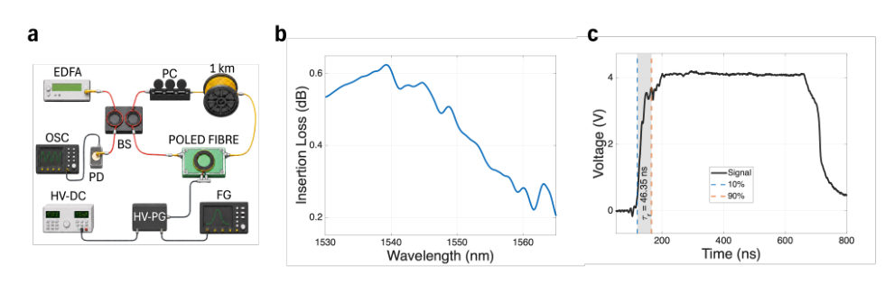
<figcaption class="paper-figure-caption"><b>Fig 3.</b> Figure 3. Characterization of the poled-fiber phase modulator. (a), Experimental configuration used for the optical and temporal characterization. Spontaneous amplified emission from an EDFA is injected into the fiber system containing the poled- fiber modulator. (b), Wavelength-dependent insertion loss obtained from measurements with an optical spectrum analyzer. (c), Photodiode waveform measured at the π-phase operating point, including the 10–90% rise-time estimation. BS: Fiber beamsplitter; EDFA: Erbium Doped Fiber Amplifier; FG: Function generator; HV-DC: High-voltage direct current power supply; HV-PG: High-voltage pulse generator; OSC: Oscilloscope; PC: Manual polarization...</figcaption>
</figure>
<figure class="paper-figure-card">
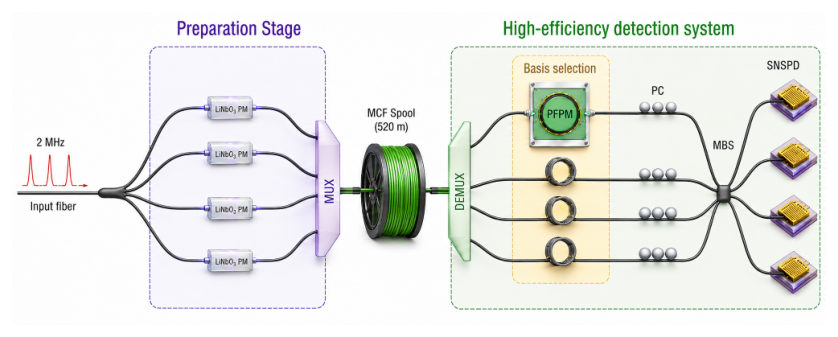
<figcaption class="paper-figure-caption"><b>Fig 4.</b> Figure 4. Schematics of the four-dimensional HD-QKD system used. A weak coherent pulse is distributed among four single- mode fibers through a four core multicore beam splitter (4C-MBS) [32] and sent to the Preparation Stage, where four LiNbO3 phase-modulators generate the QKD qudit states. The photons are then multiplexed into a 520 m spool of a 4C multicore fiber, which constitutes the transmission channel. At Bob, the photons are routed to the high-efficiency detection system, within which a single PFPM (yellow Basis Selection box) realises the active basis switching. Four polarization controllers ensure path indistinguishability before a second 4C-MBS performs the high-dimensional...</figcaption>
</figure>
<figure class="paper-figure-card">
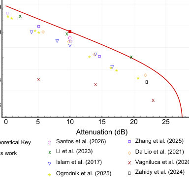
<figcaption class="paper-figure-caption"><b>Fig 5.</b> Figure 5. Finite secret-key fraction (bits per pulse) as a func- tion of channel attenuation, compared with recent leading QKD demonstrations.</figcaption>
</figure>
</div>

<p><strong>Summary.</strong> This paper demonstrates the use of Poled-fibre phase modulators (PFPMs) to overcome major bottlenecks in high-dimensional quantum measurements. By offering low loss and polarization independence directly on standard telecom fibers, PFPMs enable a highly efficient receiver for advanced QKD protocols. The results establish this technology as a key building block for scalable, fiber-integrated quantum information processing.</p>
<p><strong>Why it may be interesting.</strong> This work is highly relevant to quantum optics and photonic QI as it provides an ultra-low-loss, fiber-native component crucial for scaling up complex quantum network protocols beyond laboratory settings.</p>
<details>
<summary>Detailed structure</summary>
<p><strong>Main problem.</strong> The primary challenge is achieving efficient, high-dimensional quantum state detection for advanced protocols like QKD, where conventional modulators introduce significant optical losses and polarization sensitivity.</p>
<p><strong>Main result.</strong> The use of Poled-fibre phase modulators (PFPMs) enables a fully fiber-integrated platform that significantly reduces receiver loss and achieves record finite secret-key rates in four-dimensional QKD demonstrations.</p>
<p><strong>Method.</strong> The authors implemented an active quantum measurement basis selection using the PFPM within a high-dimensional QKD setup, comparing its performance against traditional $   ext{LiNbO}_3$ modulators.</p>
<p><strong>Model / system.</strong> The system utilizes Poled-fibre phase modulators (PFPMs) integrated into a fiber platform for active quantum state measurements in four dimensions ($d=4$). This technology is inherently compatible with standard telecom fibers and offers low loss and polarization independence.</p>
<p><strong>Key observables.</strong> Finite secret-key rate per pulse, receiver insertion loss (e.g., 2.79 dB vs 5.76 dB), and the ability to perform basis switching using a single modulator.</p>
<p><strong>Important parameters / regimes.</strong> Four-dimensional qudits ($d=4$), sub-dB insertion loss, $10 	ext{ dB}$ channel attenuation, and operational stability up to $100 	ext{ kHz}$.</p>
<p><strong>Assumptions / limitations.</strong> The analysis assumes that the mode-dependent loss contribution to QBER is negligible compared to the measured baseline interferometric QBER.</p>
<p><strong>Figures summary.</strong> Figures compare receiver losses using conventional modulators versus PFPMs for basis selection; other figures detail characterization setups and system cross-sections.</p>
<p><strong>Paper structure.</strong> The paper first establishes the need for low-loss, high-dimensional measurement devices. It then details the fabrication and characterization of the PFPM. Finally, it presents experimental results demonstrating its use in a four-dimensional QKD session, quantifying performance improvements over prior art.</p>
</details>
<details>
<summary>Abstract</summary>
<p>Efficient detection of quantum states underpins advanced device-independent quantum-information protocols that provide the ultimate level of security for tasks including quantum random number generation and quantum key distribution (QKD). High-dimensional encoding is a natural route to boost the performance of such protocols, offering enhanced noise resilience and higher information capacity, yet their practical implementation remains challenging. A key experimental bottleneck in higher dimensions is the typical need of active modulators for basis selection, which incur substantial optical losses and polarization-sensitive operation. Poled optical fiber phase modulators (PFPMs) are a fiber-native electro-optic technology that naturally addresses these challenges, combining sub-dB insertion loss, intrinsic polarization independence, and direct compatibility with standard telecommunications fiber. Here we report the first use of a PFPM for active quantum-state measurements in a fully fiber-integrated platform. Basis selection in our receiver for four-dimensional qudits is achieved using a single PFPM, substantially simplifying the receiver architecture. As a benchmark, we perform a four-dimensional QKD session and obtain a finite secret-key rate per pulse that, to the best of our knowledge, surpasses all previously reported QKD demonstrations. Our results establish poled-fiber electro-optic modulation as a broadly applicable platform for high-efficiency detection in fiber-integrated quantum information processing.</p>
</details>
<p><sub><a href="#top">↑ back to top</a></sub></p>

<p><a id="paper-2608.04870"></a></p>
<h3 id="universal-scaling-of-the-minimum-error-probability-in-qualification-of-quantum-states"><a href="http://arxiv.org/abs/2608.04870v1">Universal Scaling of the Minimum Error Probability in Qualification of Quantum States</a></h3>
<p><strong>Authors:</strong> Zhaoyu Fei, Yaotian Li, Weicheng Huang, Xiaoguang Wang, Y. M. Du<br>
<strong>Type:</strong> theory · <strong>Category:</strong> quantum information and computing · <strong>PDF:</strong> <a href="https://arxiv.org/pdf/2608.04870v1">https://arxiv.org/pdf/2608.04870v1</a><br>
<strong>Analysis basis:</strong> full PDF text, analyzed in chunks
<strong>Topic relevance:</strong> 🔥 <code>quantum measurements</code> <strong>4/5</strong> · <code>measurement-induced transitions</code> <strong>3/5</strong> · <code>non-equilibrium universality</code> <strong>2/5</strong> · <code>driven-dissipative phase transition</code> <strong>1/5</strong> · <code>entanglement &amp; information structure</code> <strong>1/5</strong> · <code>non-equilibrium dynamics</code> <strong>1/5</strong></p>
<div class="figure-strip-hint">↔ Scroll figures horizontally</div>
<div class="paper-figures-scroll">
<figure class="paper-figure-card">
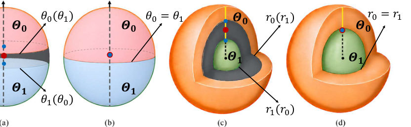
<figcaption class="paper-figure-caption"><b>Fig 1.</b> Fig. 1. Schematic illustration of the region configurations for PDQ and PQ. Panels (a) and (b) show PDQ, whereas panels (c) and (d) show PQ. The gray domains in panels (a) and (c) have different meanings. For disjoint regions, they denote domains in which no state under consideration lies (for overlapping regions, they denote the intersections Θ0 ∩Θ1). Panels (b) and (d) show adjacent regions. In panels (a) and (b), the orange and green surface domains denote Θ0 and Θ1, while the pink and light-blue interior domains denote the convex hulls of the corresponding state sets. In panels (c) and (d), the orange and green domains denote Θ0 and Θ1, respectively. In panel (c), the yellow line marks...</figcaption>
</figure>
<figure class="paper-figure-card">
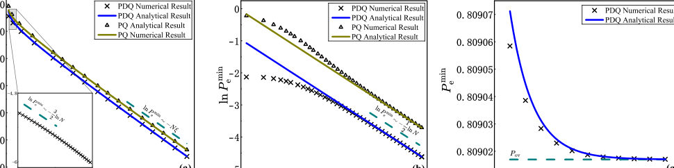
<figcaption class="paper-figure-caption"><b>Fig 2.</b> Fig. 2. Numerical verification of the minimum error probability for PDQ and PQ. (a) Disjoint regions, with θ0 = 0.05π, θ1 = 0.15π for PDQ and r0 = 0.72, r1 = 0.9 for PQ. (b) Adjacent regions, with θ0 = θ1 = 0.15π for PDQ and r0 = r1 = 0.9 for PQ. (c) Overlapping regions for PDQ, with θ0 = 0.8π and θ1 = 0.2π. Crosses (×) and triangles (△) denote the numerical results for PDQ and PQ, respectively, obtained by Eq. (1), whereas solid curves show the analytical results from Eq. (6). Gray dashed lines indicate the asymptotic scaling laws in panels (a) and (b) and the intrinsic error probability in panel (c). The inset in panel (a) highlights the N −3/2 scaling in the small-N regime.</figcaption>
</figure>
<figure class="paper-figure-card">
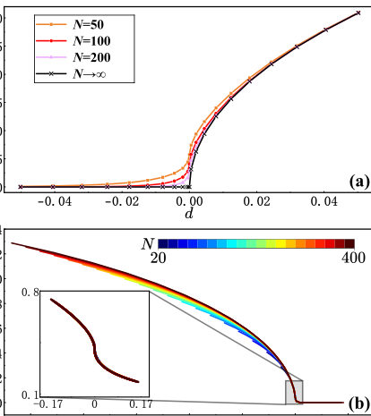
<figcaption class="paper-figure-caption"><b>Fig 3.</b> Fig. 3. Finite-N scaling analysis of the minimum error prob- ability in the PDQ. (a) Minimum error probability P min e as a function of signed distance for N copies. (b) For N copies, with N from N = 20 to N = 400, the rescaled error proba- bility N 1/2P min e is plotted as a function of d.</figcaption>
</figure>
</div>

<p><strong>Summary.</strong> This paper develops a theory for quantifying the minimum error rate when distinguishing between two sets of unknown quantum states (state qualification). By analyzing different spatial arrangements of these state regions—disjoint, adjacent, or overlapping—the authors derive universal scaling laws. These results show that the measurement precision transitions between exponential decay and power-law behavior as the number of samples increases.</p>
<p><strong>Why it may be interesting.</strong> This work provides fundamental theoretical tools for quantum sensing and verification protocols, showing how measurement precision scales universally based purely on the geometric arrangement of allowed state parameters, which is relevant to optimizing quantum measurements in any field.</p>
<details>
<summary>Detailed structure</summary>
<p><strong>Main problem.</strong> The paper addresses quantum state qualification, which is formulated as a composite quantum hypothesis test to determine if an unknown quantum state belongs to one of two predefined parameter regions.</p>
<p><strong>Main result.</strong> It derives universal scaling laws for the minimum error probability ($P_{\min e}$) depending on whether the admissible regions are disjoint (exponential decay), adjacent (power law), or overlapping, identifying a second-order phase transition between these regimes.</p>
<p><strong>Method.</strong> The analysis uses quantum hypothesis testing theory, exploiting symmetries of the parameter space to simplify the optimal measurement structure and derive asymptotic expressions for $P_{\min e}$.</p>
<p><strong>Model / system.</strong> The problem is generalized from specific examples like Polarization-Direction Qualification (PDQ) and Purity Qualification (PQ) applied to spin-1/2 states, treating the state parameters via Bloch vectors or general parameter regions.</p>
<p><strong>Key observables.</strong> Minimum error probability ($P_{\min e}$), Quantum Chernoff divergence ($\xi$), and Quantum Fisher information ($F$).</p>
<p><strong>Important parameters / regimes.</strong> The number of copies ($N$) is crucial, as are the geometric configurations of the state sets (disjoint, adjacent, overlapping).</p>
<p><strong>Assumptions / limitations.</strong> The derivation relies heavily on exploiting symmetries to find optimal measurements; for some cases, prior distributions are assumed to share specific symmetries like $SO(3)$.</p>
<p><strong>Figures summary.</strong> Figures illustrate region configurations for PDQ and PQ (a-d) and numerically verify the derived scaling laws for $P_{\min e}$ across disjoint, adjacent, and overlapping regions.</p>
<p><strong>Paper structure.</strong> The paper introduces the hypothesis test framework, analyzes specific physical examples (PDQ/PQ), derives the universal scaling laws based on region geometry, and concludes by characterizing the phase transition between these regimes.</p>
</details>
<details>
<summary>Abstract</summary>
<p>Qualification of quantum states judges which of two sets of quantum states an unknown state lies in, where the two sets are labeled by two distinct parameter regions. We formulate this problem as a composite quantum hypothesis test and uncover universal scaling laws for the minimum error probability for $N$ copies. Taking polarization-direction qualification and purity qualification as examples, we show that the $N$-copy permutation symmetry and the geometric symmetries of the parameter regions identify the optimal measurements and the "worst pairwise states". The minimum error probability scales as $N^{-3/2}\exp(-Nξ)$ for disjoint regions and as $(NF)^{-1/2}$ for adjacent regions, where $ξ$ and $F$ are the quantum Chernoff divergence and quantum Fisher information associated with the "worst pairwise states", respectively. With the minimum error probability serving as an order parameter, the transition between the scaling behaviors becomes a second-order phase transition as $N\to\infty$. Our approach determines whether a quantum state belongs to a given set without full state tomography, thereby enabling qualification of large ensembles using finite samples.</p>
</details>
<p><sub><a href="#top">↑ back to top</a></sub></p>

<p><a id="paper-2608.04467"></a></p>
<h3 id="analytic-correspondence-between-multipartite-entanglement-and-quantum-phase-transitions"><a href="http://arxiv.org/abs/2608.04467v1">Analytic correspondence between multipartite entanglement and quantum phase transitions</a></h3>
<p><strong>Authors:</strong> Huynh Le Dan Linh, Vu Tuan Hai, Le Bin Ho<br>
<strong>Type:</strong> theory · <strong>Category:</strong> statistical mechanics · <strong>PDF:</strong> <a href="https://arxiv.org/pdf/2608.04467v1">https://arxiv.org/pdf/2608.04467v1</a><br>
<strong>Analysis basis:</strong> full PDF text, analyzed in chunks
<strong>Topic relevance:</strong> 🔥 <code>entanglement &amp; information structure</code> <strong>4/5</strong> · <code>analog quantum simulation</code> <strong>3/5</strong> · <code>Keldysh / 2PI / non-Gaussian methods</code> <strong>1/5</strong> · <code>driven-dissipative phase transition</code> <strong>1/5</strong> · <code>exotic spin models in light-matter</code> <strong>1/5</strong></p>
<div class="figure-strip-hint">↔ Scroll figures horizontally</div>
<div class="paper-figures-scroll">
<figure class="paper-figure-card">
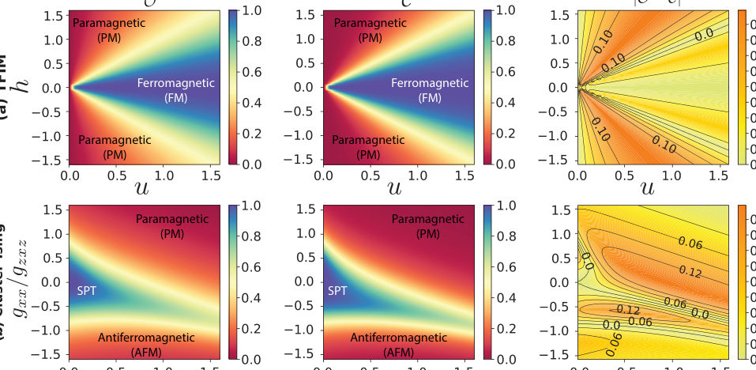
<figcaption class="paper-figure-caption"><b>Fig 1.</b> FIG. 1. Comparison between the normalized GOP e O (left), normalized CE eC (center), and their absolute difference | e O −eC| (right) for two representative one-dimensional spin models with N = 5: (a) the transverse-field Ising model, and (b) the generalized cluster-Ising model. In all cases, CE accurately reproduces the phase boundaries identified by the corresponding GOP. The normalized root-mean-square deviations are approximately 7% and 8%, respectively. The remaining discrepancies are localized predominantly near the critical manifold, while the agreement within each gapped phase is excellent, consistent with Theorem 1.</figcaption>
</figure>
</div>

<p><strong>Summary.</strong> The paper establishes a deep theoretical link showing that multipartite entanglement (Concentratable Entanglement) behaves identically to traditional order parameters when characterizing Quantum Phase Transitions in 1D spin systems. By proving this correspondence and demonstrating its measurement feasibility via SWAP tests, it offers a universal, model-independent diagnostic tool for studying quantum criticality.</p>
<p><strong>Why it may be interesting.</strong> This work provides a powerful, entanglement-based diagnostic tool that bypasses the need to calculate model-specific order parameters, making QPT detection more accessible for experimental quantum simulation platforms.</p>
<details>
<summary>Detailed structure</summary>
<p><strong>Main problem.</strong> The paper aims to establish a rigorous, analytic correspondence between multipartite entanglement measures and quantum phase transitions (QPTs) in 1D quantum spin systems.</p>
<p><strong>Main result.</strong> It proves that Concentratable Entanglement (CE) shares the same analyticity structure as generalized order parameters (GOPs), identifies the same quantum phases, and serves as an experimentally accessible, model-independent probe for QPTs.</p>
<p><strong>Method.</strong> The analysis involves deriving theoretical theorems showing shared analytic dependence on single-particle correlation matrices ($\Gamma$) for Gaussian ground states, complemented by numerical validation on specific spin models.</p>
<p><strong>Model / system.</strong> The study focuses on one-dimensional quantum spin systems, specifically the Transverse-Field Ising Model (TFIM) and generalized cluster-Ising models. The Hamiltonians are local spin-1/2 interactions parameterized by coupling constants ($\lambda$).</p>
<p><strong>Key observables.</strong> Concentratable Entanglement ($C(S)$), Generalized Order Parameters (GOPs, $O(\lambda)$), and the single-particle correlation matrix ($\Gamma_{ij}$).</p>
<p><strong>Important parameters / regimes.</strong> Control parameters $\lambda$ governing the Hamiltonian; critical points where phase transitions occur.</p>
<p><strong>Assumptions / limitations.</strong> The analysis assumes a unique gapped ground state within each quantum phase, and for free-fermion systems, it relies on the analyticity of the Bogoliubov transformation with respect to Hamiltonian parameters.</p>
<p><strong>Figures summary.</strong> Figure 1 compares normalized GOP ($\langle O 
angle$) and normalized CE ($\langle C 
angle$) across the TFIM and cluster-Ising models, demonstrating that CE accurately reproduces the phase boundaries identified by GOPs.</p>
<p><strong>Paper structure.</strong> The paper develops theoretical theorems establishing shared analyticity (Theorem 1), demonstrates phase discrimination capabilities using CE (Theorem 2), and proves an exact correspondence for Gaussian ground states based on $\Gamma$ (Theorem 3). This is validated numerically on TFIM and cluster-Ising models.</p>
</details>
<details>
<summary>Abstract</summary>
<p>We derive an analytic correspondence between multipartite concentratable entanglement (CE) and quantum phase transitions in one-dimensional quantum spin systems. We prove that CE shares the same analyticity structure as generalized order parameters, identifies the same quantum phases, and, for Gaussian ground states, is completely determined by the same single-particle correlation matrix. Numerical validation on the transverse-field Ising and generalized cluster-Ising models confirms these analytical predictions for both symmetry-breaking and symmetry-protected topological quantum phase transitions. Since CE can be measured directly using a constant-depth parallelized SWAP-test circuit, our results establish CE as an experimentally accessible, model-independent probe of quantum phase transitions without requiring model-specific order parameters.</p>
</details>
<p><sub><a href="#top">↑ back to top</a></sub></p>

<p><a id="paper-2608.04099"></a></p>
<h3 id="contextuality-in-sequential-state-discrimination"><a href="http://arxiv.org/abs/2608.04099v1">Contextuality in Sequential State Discrimination</a></h3>
<p><strong>Authors:</strong> Nyan Raess, Farid Shahandeh<br>
<strong>Type:</strong> theory · <strong>Category:</strong> quantum information and computing · <strong>PDF:</strong> <a href="https://arxiv.org/pdf/2608.04099v1">https://arxiv.org/pdf/2608.04099v1</a><br>
<strong>Analysis basis:</strong> full PDF text, analyzed in chunks
<strong>Topic relevance:</strong> 🔥 <code>quantum measurements</code> <strong>4/5</strong> · <code>measurement-induced transitions</code> <strong>3/5</strong> · <code>Keldysh / 2PI / non-Gaussian methods</code> <strong>1/5</strong> · <code>driven-dissipative phase transition</code> <strong>1/5</strong> · <code>entanglement &amp; information structure</code> <strong>1/5</strong></p>
<div class="figure-strip-hint">↔ Scroll figures horizontally</div>
<div class="paper-figures-scroll">
<figure class="paper-figure-card">
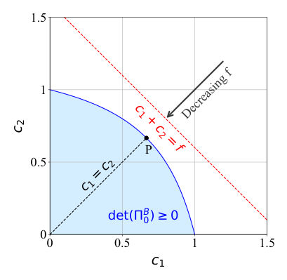
<figcaption class="paper-figure-caption"><b>Fig 1.</b> FIG. 1: A visualization of the optimal solution for USD of two pure qubit states under equal priors, here with confusability s2 = 1/4. The blue region contains all feasible cB 1 , cB 2 choices i.e. ΠB 0 ≥0. To minimize the failure probability we want to maximize the sum cB 1 + cB 2 : we want the largest f so that the red line intersects the feasible region. It is easy to see that this will occur along the line cB 1 = cB 2 ; specifically, at P = (1/1+s, 1/1+s).</figcaption>
</figure>
<figure class="paper-figure-card">
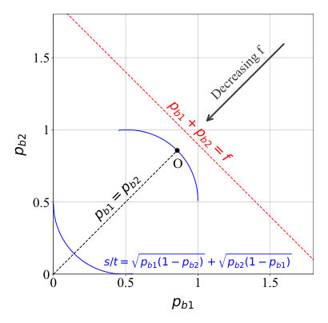
<figcaption class="paper-figure-caption"><b>Fig 2.</b> FIG. 2: A visualization of the optimal solution for sequential MESD of two pure qubit states under equal priors, assuming the ratio s/t is fixed; here s/t = 0.7. The blue curve contains all feasible p1b, p2b choices. The success probability to be maximized is 1/2(p1b + p2b) = f/2. The largest f for which the red line and blue curve intersect occurs along p1b = p2b, specifically at O =  1/2(1 + p</figcaption>
</figure>
<figure class="paper-figure-card">
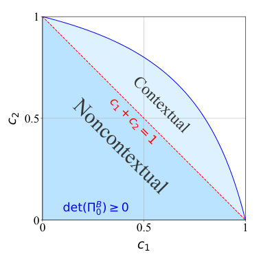
<figcaption class="paper-figure-caption"><b>Fig 3.</b> FIG. 3: A visualization of the source of contextual advantage; the nonnegativity condition of the quantum model is the blue region. Here, s = 0.5. Nonnegativity/noncontextuality of the ontological representation is bounded by the red line. For any confusability s2 ̸= 0, 1 there is a margin between these boundaries, representing contextual strategies that outperform the NC bound. Only the bounding blue curve has determinant exactly 0. This means that strategies within this margin outperform the NC bound and are still viable in the sequential protocol, as the post-measurement states are distinguishable.</figcaption>
</figure>
<figure class="paper-figure-card">
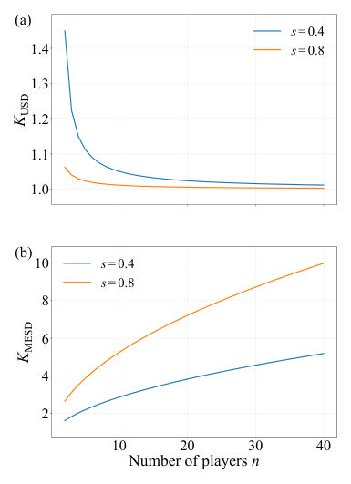
<figcaption class="paper-figure-caption"><b>Fig 4.</b> FIG. 4: A comparison of the approximate number of players with a contextual scenario in each protocol, denoted by KUSD and KMESD respectively, against number of players n, where 2 ≤n ≤40. Note that for USD the values of s are such that a &gt; 1/2, as is required for Eq. (39) to be well-defined. For USD the number of contextual players drops rapidly, while for MESD it grows approximately at rate √n.</figcaption>
</figure>
</div>

<p><strong>Summary.</strong> This work investigates when generalized contextuality is necessary for optimal strategies in sequential quantum state discrimination. By comparing Unambiguous State Discrimination (USD) and Minimum Error State Discrimination (MESD), the authors show that the requirement for contextuality changes depending on the protocol and the initial distinguishability of the states. The findings offer deep insights into the fundamental limitations imposed by quantum mechanics on multi-stage measurement processes.</p>
<p><strong>Why it may be interesting.</strong> It provides rigorous theoretical tools (contextuality measures) applicable to quantum measurement theory, which underpins many open quantum system dynamics and information processing tasks.</p>
<details>
<summary>Detailed structure</summary>
<p><strong>Main problem.</strong> The paper characterizes the role of generalized contextuality in sequential quantum state discrimination protocols, comparing unambiguous (USD) and minimum error (MESD) settings.</p>
<p><strong>Main result.</strong> Contextuality's presence depends critically on the protocol used (USD vs. MESD) and the distinguishability of the input states; for instance, contextuality is predicted to be more likely in sequential USD when states have low confusability.</p>
<p><strong>Method.</strong> The analysis employs formalisms like COPE matrices, consistency relations derived from completeness relations, and ontological modeling to test violations of noncontextuality across multiple measurement stages.</p>
<p><strong>Model / system.</strong> The system involves discriminating between a set of unknown quantum states (qubits) sequentially among $n$ players. The protocols analyzed are Minimum Error State Discrimination (MESD) and Unambiguous State Discrimination (USD).</p>
<p><strong>Key observables.</strong> Success probabilities for USD ($P_{Q}^{USD}(n)$) and MESD, confusability ($s^2$), and post-measurement confusability ($t^2$).</p>
<p><strong>Important parameters / regimes.</strong> The number of players $n$, the state confusability $s^2$, and the measurement parameters defining detection operators.</p>
<p><strong>Assumptions / limitations.</strong> Assumes specific structures for POVM elements in MESD analysis, and relies on Spekkens' assumption relating operational indistinguishability to ontological equivalence.</p>
<p><strong>Figures summary.</strong> Figure 1 visualizes the feasible region for optimal measurements in single-player USD for two pure qubit states, showing the optimum relative to the boundary defined by confusability.</p>
<p><strong>Paper structure.</strong> The paper progresses from analyzing the single-player case (USD) using COPE formalism, extends this analysis to sequential players ($n>1$) by deriving consistency relations, and then compares contextuality findings between USD and MESD protocols, culminating in detailed ontological checks for MESD.</p>
</details>
<details>
<summary>Abstract</summary>
<p>Generalized contextuality is known to be required in optimal strategies for quantum state discrimination protocols. More recently, sequential discrimination tasks have been studied; n players attempt to determine in which state a qubit was prepared, in such a way that they all have a finite probability of success. We consider the extent to which contextuality plays a role in sequential versions of both unambiguous and minimum error discrimination. In the standard nonsequential case where n = 1, we use the COPE formalism to demonstrate that the presence of contextuality is guaranteed not only for the optimal measurement, but for a specific set of nonoptimal measurements as well. In the sequential case n &gt; 1, we show that the presence of contextuality depends on which states are prepared, and on the protocol (unambiguous or minimum error) selected.</p>
</details>
<p><sub><a href="#top">↑ back to top</a></sub></p>

<p><a id="paper-2608.04497"></a></p>
<h3 id="the-two-particle-irreducible-vertex-of-the-two-dimensional-lattice-math269math-model-across-the-ising-transition"><a href="http://arxiv.org/abs/2608.04497v1">The two-particle-irreducible vertex of the two-dimensional lattice $φ^4$ model across the Ising transition</a></h3>
<p><strong>Authors:</strong> Lode Pollet<br>
<strong>Type:</strong> theory · <strong>Category:</strong> statistical mechanics · <strong>PDF:</strong> <a href="https://arxiv.org/pdf/2608.04497v1">https://arxiv.org/pdf/2608.04497v1</a><br>
<strong>Analysis basis:</strong> full PDF text, analyzed in chunks
<strong>Topic relevance:</strong> 🔥 <code>Keldysh / 2PI / non-Gaussian methods</code> <strong>4/5</strong> · <code>analog quantum simulation</code> <strong>1/5</strong> · <code>driven-dissipative phase transition</code> <strong>1/5</strong> · <code>methods for driven-dissipative</code> <strong>1/5</strong> · <code>non-equilibrium dynamics</code> <strong>1/5</strong> · <code>non-equilibrium universality</code> <strong>1/5</strong></p>
<div class="figure-strip-hint">↔ Scroll figures horizontally</div>
<div class="paper-figures-scroll">
<figure class="paper-figure-card">
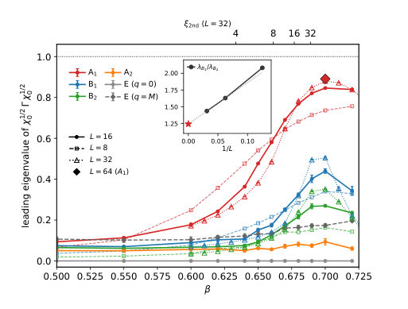
<figcaption class="paper-figure-caption"><b>Fig 1.</b> FIG. 1. The leading eigenvalue of the symmetrized Bethe- Salpeter kernel, given by χ1/2 0 Γχ1/2 0 , is evaluated at zero trans- fer and resolved in the C4v irreducible representations as a function of the inverse temperature β (with L = 16, rep- resented by filled symbols). The A1 channel (ferromagnetic) drives the instability toward unity, while the B1 (nematic) and B2 (diagonal nematic) channels cooperate. The A2 channel is inert, and the E channel, associated with anti-ferromagnetic fluctuations, vanishes identically at q = 0 due to parity. How- ever, it is non-zero at the corner transfer q = M = (π, π), indicated by a grey dashed line. Open symbols illustrate the finite-size trend for...</figcaption>
</figure>
<figure class="paper-figure-card">
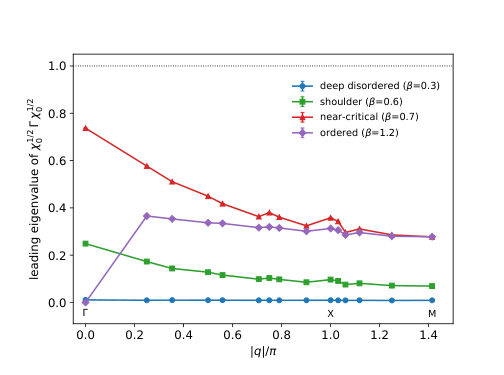
<figcaption class="paper-figure-caption"><b>Fig 2.</b> FIG. 2. The leading kernel eigenvalue as a function of trans- fer momentum |q| is shown along the irreducible wedge, with points marked at Γ, X, and M, for four regimes at L = 8 in the A1 sector. The near-critical curve is taken at β = 0.7, where the A1 eigenvalue reaches its maximum on this finite lattice of size L = 8. This finite-size pseudo-critical point is slightly above the thermodynamic critical point βc ≈0.685 (as discussed in Sec. III and App. G). It is important to note that we are plotting this finite-size maximum instead of βc. In the deep disordered phase, the vertex is weak and nearly independent of q. As we approach criticality, the dominance of the q = 0 mode increases,...</figcaption>
</figure>
<figure class="paper-figure-card">
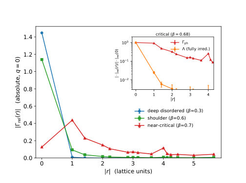
<figcaption class="paper-figure-caption"><b>Fig 3.</b> FIG. 3. The absolute value of the relative-coordinate vertex kernel is defined as Γrel(r) = 1 N P</figcaption>
</figure>
<figure class="paper-figure-card">
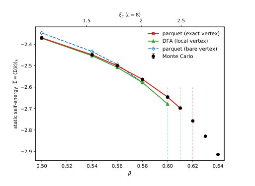
<figcaption class="paper-figure-caption"><b>Fig 4.</b> FIG. 4. The local self-energy, denoted as Σ = ⟨Σ(k)⟩k, is plotted against β for a system with L = 8. This data comes from a fully self-consistent solution using the parquet–Schwinger-Dyson–Dyson approach. The results show the full measured (exact) vertex represented by red squares, while the DΓA local single-site vertex is indicated by green triangles. The blue open diamonds show the bare- vertex (parquet-approximation) result, Λ = −6λ/N, included as a reference. These findings are compared to Monte Carlo simulations, with points that include bootstrap errors. The exact vertex closely aligns with the Monte Carlo self-energy, whereas the local DΓA vertex falls approximately 1% short....</figcaption>
</figure>
<figure class="paper-figure-card">
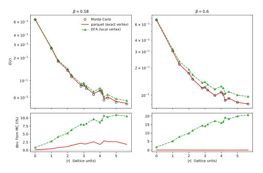
<figcaption class="paper-figure-caption"><b>Fig 5.</b> FIG. 5. The real-space propagator G(r) is compared be- tween the fully self-consistent parquet solution—derived from both the fully measured (statistically exact) vertex and the approximate DΓA local vertex—and the Monte Carlo prop- agator (also statistically exact) at β = 0.58 and 0.60 (with L = 8, on a logarithmic scale). The exact vertex accurately reproduces G(r) at all distances, while the local DΓA vertex shows an overshoot at large |r|. In the lower panels, the per- centage deviation from the Monte Carlo results is presented. Statistical errors, obtained through bootstrapping, are ap- proximately 0.1%, which is smaller than the plotted symbols.</figcaption>
</figure>
</div>

<p><strong>Summary.</strong> This work rigorously calculates the two-particle-irreducible vertex for the 2D $\phi^4$ model across its Ising phase transition. By combining Monte Carlo data with advanced functional methods, the authors pinpoint that the A1 channel drives the instability and provide a highly accurate benchmark for theoretical approximations of critical dynamics.</p>
<p><strong>Why it may be interesting.</strong> While focused on classical statistical mechanics, the rigorous diagrammatic techniques used to calculate correlation functions and vertices are foundational tools applicable to understanding quantum critical points in many-body systems relevant to AMO physics.</p>
<details>
<summary>Detailed structure</summary>
<p><strong>Main problem.</strong> The study reconstructs and analyzes the two-particle-irreducible (2PI) vertex of the 2D lattice $\phi^4$ model as it passes through the Ising phase transition.</p>
<p><strong>Main result.</strong> The instability driving the transition is governed by the A1 (ferromagnetic) channel, while the fully irreducible vertex can be accurately determined using advanced diagrammatic techniques like parquet equations.</p>
<p><strong>Method.</strong> The authors combine Monte Carlo measurements of two-particle correlators with theoretical frameworks such as Bethe-Salpeter and Parquet/Schwinger-Dyson equations to extract the vertex function $\Gamma$.</p>
<p><strong>Model / system.</strong> The system is a two-dimensional single-component $\phi^4$ lattice field theory, which belongs to the Ising universality class. The analysis tracks its behavior across the critical point.</p>
<p><strong>Key observables.</strong> The leading eigenvalue of the symmetrized Bethe-Salpeter kernel; the momentum and real-space dependence of the 2PI vertex $\Gamma(k, p; q)$</p>
<p><strong>Important parameters / regimes.</strong> Temperature/Inverse Temperature ($\beta$); lattice size ($L$); momentum transfer ($q$)</p>
<p><strong>Assumptions / limitations.</strong> The analysis relies on inverting Monte Carlo data and employing approximations like the Dynamical Local-Vertex Approximation (D$\Gamma$A) and solving parquet equations.</p>
<p><strong>Figures summary.</strong> Figures illustrate how leading eigenvalues approach unity at criticality, show $\Gamma(q)$ evolving from short-range to power-law tails near $T_c$, and map out convergence walls for theoretical approximations.</p>
<p><strong>Paper structure.</strong> The paper proceeds by first relating the vertex to measured correlators, analyzing its symmetry decomposition ($C_{4v}$), tracking the instability across phases (disordered $\to$ critical $\to$ ordered), and finally benchmarking results against advanced functional methods like parquet equations.</p>
</details>
<details>
<summary>Abstract</summary>
<p>We reconstruct the 2PI vertex $Γ(k,p;q)$ from Monte Carlo measurements of the connected two-particle correlator for the two-dimensional single-component $φ^4$ lattice field theory and follow it across the Ising transition. Resolving the vertex in the irreducible representations of the point group $C_{4v}$, we find that the instability is driven by the $A_1$ (ferromagnetic) channel at zero transfer, whose leading eigenvalue of the symmetrized Bethe--Salpeter kernel approaches unity. Substantial $B_1$ (nematic) and $B_2$ (diagonal nematic) contributions cooperate with $A_1$ across all system sizes, highlighting that the soft sector is   multidimensional. In real space, the vertex is short-ranged away from criticality while it develops a power-law tail at the critical point. In the ordered phase, the $q=0$ eigenvalue collapses because the ferromagnetic weight has condensed into the (one-particle-reducible) order parameter (or collective coordinate for a finite system), although finite-momentum fluctuations persist. By stripping the crossed-channel ladders, we obtain the fully irreducible vertex, which is a local contact -- to a very good approximation. Inserted into the parquet and Schwinger--Dyson equations, this contact reproduces the Monte Carlo self-energy with an accuracy better than one-tenth of a percent. This provides a first-principles benchmark of the dynamical local-vertex approximation (D$Γ$A). Additionally, we demonstrate that in the critical region, the physical solution of the parquet equations behaves as a repulsive fixed point, driven initially by a single order-parameter mode.</p>
</details>
<p><sub><a href="#top">↑ back to top</a></sub></p>

<p><a id="paper-2608.04782"></a></p>
<h3 id="lifting-the-degeneracy-of-quantum-spin-liquid-phase-by-uniaxial-pressure"><a href="http://arxiv.org/abs/2608.04782v1">Lifting the degeneracy of quantum spin liquid phase by uniaxial pressure</a></h3>
<p><strong>Authors:</strong> Shams Sohel Islam, Zurab Guguchia, Orion Gerguri, Petr Král, Maxime Lamotte, Toni Shiroka, Jonas A. Krieger, Thomas J. Hicken, Tina Arh, Gediminas Simutis, Abanoub Hanna, Nazmul Islam, Bella Lake, Hubertus Luetkens, Hans Henning Klauss, Rajib Sarkar<br>
<strong>Type:</strong> experiment · <strong>Category:</strong> strongly correlated electrons · <strong>PDF:</strong> <a href="https://arxiv.org/pdf/2608.04782v1">https://arxiv.org/pdf/2608.04782v1</a><br>
<strong>Analysis basis:</strong> full PDF text, analyzed in chunks
<strong>Topic relevance:</strong> 🔥 <code>analog quantum simulation</code> <strong>4/5</strong> · <code>exotic spin models in light-matter</code> <strong>3/5</strong> · <code>spintronics-quantum-optics interface</code> <strong>1/5</strong></p>
<div class="figure-strip-hint">↔ Scroll figures horizontally</div>
<div class="paper-figures-scroll">
<figure class="paper-figure-card">
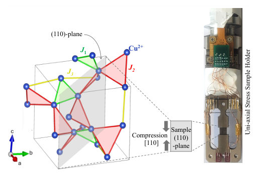
<figcaption class="paper-figure-caption"><b>Fig 1.</b> FIG. 1. (a) Schematic of the 3D frustrated Cu2+ network in PbCuTe2O6, highlighting representative competing exchange pathways J1, J2, and J3 and the (110) plane relevant to the uniaxial-stress geometry. The arrow indicates the applied compression direction, [110]. For clarity, the J4 interaction, which forms an additional chain-like coupling along the body diagonal, is not shown [25]. (b) Photograph of the sample mounted on the uniaxial-stress sample holder for µSR.</figcaption>
</figure>
<figure class="paper-figure-card">
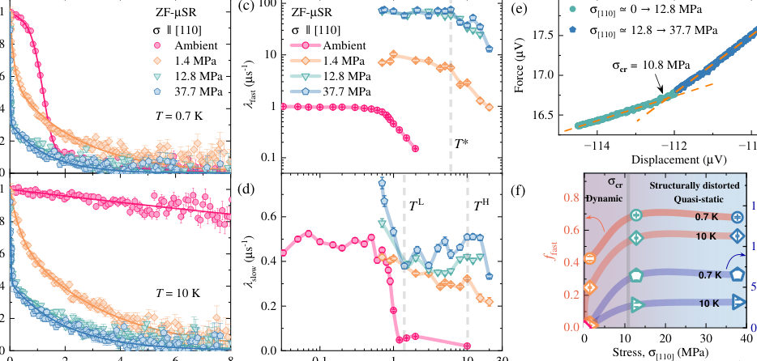
<figcaption class="paper-figure-caption"><b>Fig 2.</b> FIG. 2. (a),(b) Representative ZF-µSR depolarization measured as a function of uniaxial stress σ[110] at T = 0.7 K and 10 K, respectively. At ambient pressure, these temperatures correspond to the proposed QSL-like regime and a regime closer to the paramagnetic state, respectively [10]. Solid lines are fits using the two-component relaxation model described in the SM [26]. (c),(d) Temperature dependence of the fast and slow ZF relaxation rates for selected uniaxial stresses. Vertical dashed lines indicate the characteristic temperature scales discussed in the text. (e) Stress–strain curve: force versus displacement measured during the uniaxial-stress experiment. The arrow marks the slope...</figcaption>
</figure>
<figure class="paper-figure-card">
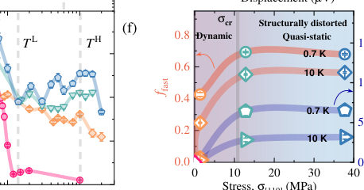
<figcaption class="paper-figure-caption"><b>Fig 3.</b> Figure 3(d) shows the Knight shifts extracted from the TF-µSR spectra [26]. Since the muon Knight shift pro- vides a measure of local magnetic susceptibility, its tem- perature dependence tracks the evolution of local spin</figcaption>
</figure>
<figure class="paper-figure-card">
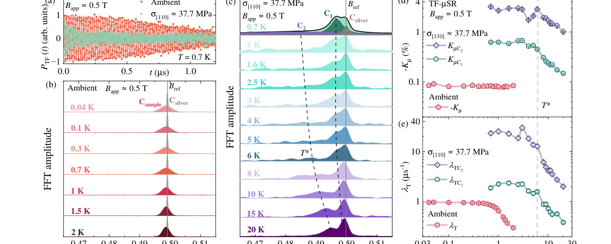
<figcaption class="paper-figure-caption"><b>Fig 4.</b> FIG. 3. (a) Representative TF-µSR depolarization measured at T = 0.7 K under ambient pressure and σ[110] = 37.7 MPa, in an applied transverse field of Bapp ≃0.5 T. The solid lines represent fits described in the SM [26]. (b),(c) Fourier-transform spectra measured at representative temperatures under ambient pressure and σ[110] = 37.7 MPa, respectively, in the same applied field. At σ[110] = 37.7 MPa, the decomposition of the 0.7 K spectra into two sample-related peaks (C1 and C2) and a reference peak (Csilver) is shown. The vertical solid line marks the reference field determined from the silver signal. (d) Temperature dependence of the muon Knight shifts under ambient pressure and σ[110] =...</figcaption>
</figure>
<figure class="paper-figure-card">
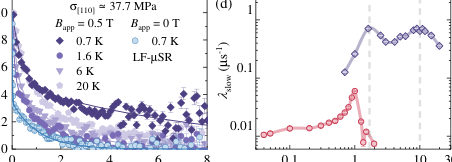
<figcaption class="paper-figure-caption"><b>Fig 5.</b> FIG. 4. (a), (b) Longitudinal-field (LF) µSR depolariza- tion PLF(t) measured under ambient pressure and 37.7 MPa, respectively, at selected temperatures in applied fields of Bapp = 0 and 0.5 T. Solid lines are fits using the same two-component relaxation model employed for ZF-µSR anal- ysis [26]. (c), (d) Temperature dependence of the fast (λfast) and slow (λslow) LF relaxation rates under ambient pressure and 37.7 MPa, respectively. Vertical dashed lines mark the characteristic temperature scales discussed in the text.</figcaption>
</figure>
</div>

<p><strong>Summary.</strong> This work uses muon spin relaxation ($\mu$SR) under uniaxial pressure to probe the quantum spin liquid candidate $   ext{PbCuTe}_2   ext{O}_6$. The researchers found that applying stress modifies the local magnetic response and enhances quasi-static correlations without inducing conventional long-range magnetic order. This demonstrates a powerful, symmetry-selective method for controlling frustrated exchange interactions in QSL materials.</p>
<p><strong>Why it may be interesting.</strong> The ability to tune quantum magnetic ground states using external strain is highly relevant for understanding emergent phenomena in strongly correlated electron systems, providing a clean experimental handle on frustrated interactions.</p>
<details>
<summary>Detailed structure</summary>
<p><strong>Main problem.</strong> To determine if uniaxial pressure can control the frustrated exchange landscape of a 3D Quantum Spin Liquid (QSL) candidate, $    ext{PbCuTe}_2   ext{O}_6$, and potentially drive it toward magnetic order.</p>
<p><strong>Main result.</strong> The system remains in a dynamically fluctuating state even under high stress, but compression provides a clean route to tune the frustrated exchange landscape by exploiting magnetoelastic coupling. No evidence for conventional static long-range magnetic order was observed.</p>
<p><strong>Method.</strong> Muon spin relaxation/rotation ($\mu$SR) measurements were performed <em>in situ</em> while applying controlled uniaxial compression along the [110] direction.</p>
<p><strong>Model / system.</strong> The study investigates $    ext{PbCuTe}_2   ext{O}_6$, a candidate three-dimensional (3D) $S=1/2$ QSL characterized by competing antiferromagnetic interactions forming a frustrated 3D hyper-hyperkagome network.</p>
<p><strong>Key observables.</strong> Muon spin relaxation rates ($\lambda_{	ext{fast}}, \lambda_{	ext{slow}}$), internal-field distribution broadening, and the stress-strain curve.</p>
<p><strong>Important parameters / regimes.</strong> Uniaxial stress $\sigma_{[110]}$ up to $37.7\ 	ext{MPa}$; critical stress $\sigma_{	ext{cr}} \sim 10.8\ 	ext{MPa}$.</p>
<p><strong>Assumptions / limitations.</strong> The analysis assumes that the observed changes are due to magnetoelastic coupling between lattice strain and magnetic correlations.</p>
<p><strong>Figures summary.</strong> Figures show ZF-$\mu$SR spectra, force-displacement curves correlating stress with $\mu$SR response, and temperature dependence of relaxation rates under varying uniaxial stresses.</p>
<p><strong>Paper structure.</strong> The paper systematically measures $\mu$SR properties across a range of applied uniaxial stresses, identifying critical structural transitions ($\sigma_{	ext{cr}}$) that correlate with changes in the local magnetic environment and spin dynamics.</p>
</details>
<details>
<summary>Abstract</summary>
<p>We report muon spin relaxation/rotation ($μ$SR) measurements of the candidate three-dimensional (3D) quantum spin liquid (QSL) PbCuTe$_2$O$_6$, hosting $S=1/2$ moments, under controlled in situ [110] uniaxial compression up to $σ_{[110]}=37.7$~MPa. A small directional lattice perturbation significantly modifies the local magnetic response, while above $σ_{\rm cr}\sim10.8$\,MPa the relaxation rates are strongly enhanced and the internal-field distribution is substantially broadened. These changes occur along with the local crystalline symmetry breaking. While, no evidence for conventional static long-range magnetic order is observed, the compression drives the system towards a structurally modified and strongly correlated state in which enhanced quasi-static correlations coexist with persistent slow spin dynamics. This work demonstrates a clean and symmetry-selective route to control frustrated exchange landscape and access hidden magnetic instabilities in a 3D QSL candidate opening up the possibilities to tune other correlated systems where intrinsic coupling between magnetic and lattice degrees of freedom are relevant.</p>
</details>
<p><sub><a href="#top">↑ back to top</a></sub></p>

<p><a id="paper-2608.04103"></a></p>
<h3 id="reconstructing-non-abelian-braiding-and-fusion-without-anyon-transport"><a href="http://arxiv.org/abs/2608.04103v1">Reconstructing non-Abelian braiding and fusion without anyon transport</a></h3>
<p><strong>Authors:</strong> Lucy Byles, Matthew D. Horner, Benjamin T. H. Varcoe, Jiannis K. Pachos<br>
<strong>Type:</strong> experiment · <strong>Category:</strong> quantum information and computing · <strong>PDF:</strong> <a href="https://arxiv.org/pdf/2608.04103v1">https://arxiv.org/pdf/2608.04103v1</a><br>
<strong>Analysis basis:</strong> full PDF text, analyzed in chunks
<strong>Topic relevance:</strong> 🔥 <code>QC/QI experiment</code> <strong>4/5</strong> · <code>quantum measurements</code> <strong>3/5</strong> · <code>measurement-induced transitions</code> <strong>1/5</strong></p>
<div class="figure-strip-hint">↔ Scroll figures horizontally</div>
<div class="paper-figures-scroll">
<figure class="paper-figure-card">
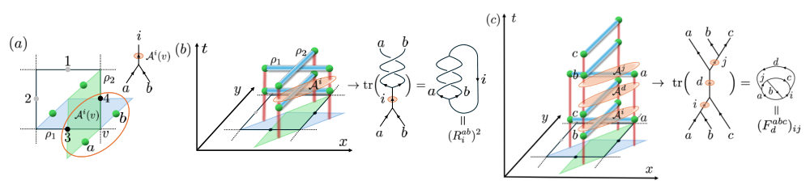
<figcaption class="paper-figure-caption"><b>Fig 1.</b> FIG. 1. Diagrammatic reconstruction of (Ri)2 and (Fij)2. (a) Minimal plaquette underlying the reduced two-qutrit protocol. Although the original D(S3) plaquette contains four d = 6 qudits, the relevant ribbon and projection operators act non-trivially only on qudits 3 and 4, and their action is subsequently reduced to two qutrits. The reduced ribbons FG ρ1 and F G ρ2 create pairs of G anyons (green spheres), and the vertex projector Ai(v) resolves their fusion channel. (b) Spacetime sequence for reconstructing the squared braiding phase. Temporally ordered ribbon operations and an intermediate charge projection close the worldlines into a double braid of anyons a and b in channel i, giving...</figcaption>
</figure>
<figure class="paper-figure-card">
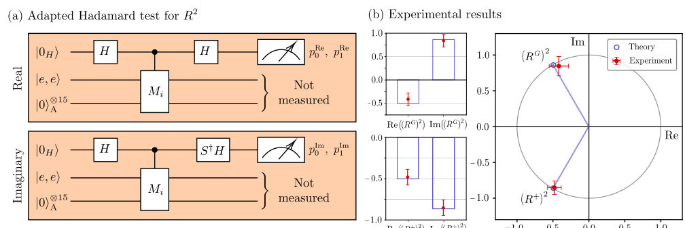
<figcaption class="paper-figure-caption"><b>Fig 2.</b> FIG. 2. Hardware reconstruction of the squared braiding phases. (a) Adapted Hadamard-test circuits used to extract the real and imaginary components of the non-unitary ribbon-projection overlap. The block Mi is the unitary dilation of the reduced two-qutrit map FG ρ2F G ρ1Ai(v)FG ρ2F G ρ1. The real component is obtained with the final Hadamard measurement basis, while the imaginary component is obtained by inserting S† before the final Hadamard. The operation ancillas are not measured, as only the Hadamard ancilla outcomes p0 and p1 are used. The i = + circuit gives Re  (R+)2 = 8(2pRe 0 −1) and Im  (R+)2 = 8(2pIm 0 −1), while replacing Ai(v) by the identity gives (R1)2 and hence (RG)2 =...</figcaption>
</figure>
<figure class="paper-figure-card">
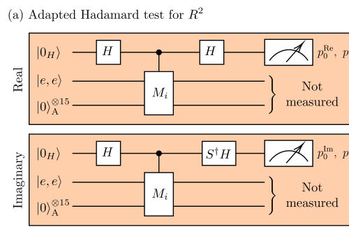
<figcaption class="paper-figure-caption"><b>Fig 3.</b> Figure 1(b) gives the spacetime interpretation of the braiding measurement. The horizontal plane is the pla- quette geometry and the vertical direction is time. The ordered application of the ribbons first creates the two G anyons a and b, after which the projection Ai(v) fixes their fusion channel and subsequent ribbon operations are applied. Because the quantity measured is a vacuum expectation value, the initial and final ribbon endpoints are contracted, as indicated by the red vertical lines, pro- ducing closed spacetime loops. The ordering of the two final ribbon operations is essential: the sequence shown gives linked loops, corresponding to a double exchange of the anyons a and b,...</figcaption>
</figure>
<figure class="paper-figure-card">
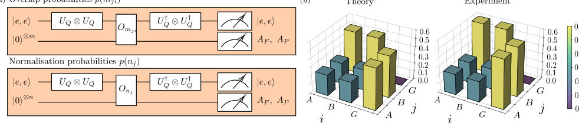
<figcaption class="paper-figure-caption"><b>Fig 4.</b> FIG. 3. Hardware reconstruction of the squared fusion amplitudes. (a) Post-selected fusion-readout protocol. The upper circuit measures the overlap probabilities p(mji) using m = 30 ancillas, while the lower circuit measures the normalisation probabilities p(nj) using n = 27 ancillas. Unlike the braiding reconstruction, no Hadamard test is used: the probabilities are obtained from bit strings satisfying the ribbon-operation condition AF = 0 · · · 0, the projection-ancilla syndromes AP = (si, sj) for the overlap circuit or sj for the normalisation circuit, and the final computational output |e, e⟩. (b) Theoretical and experimentally reconstructed matrices of squared fusion amplitudes,...</figcaption>
</figure>
<figure class="paper-figure-card">
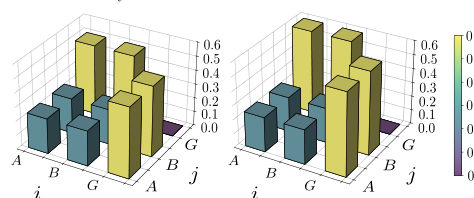
<figcaption class="paper-figure-caption"><b>Fig 5.</b> Figure 1(c) shows the analogous construction for fu- sion. The lower part of the sequence prepares one fusion- basis resolution of three G anyons: two anyons are first resolved through channel i, and the resulting charge sub- sequently fuses to the final channel d = G. Inserting the additional ribbon operation and the projection Aj</figcaption>
</figure>
</div>

<p><strong>Summary.</strong> The authors developed and experimentally demonstrated a novel, resource-efficient method to measure non-Abelian braiding and fusion properties for topological quantum computing using only local measurements on trapped ions. By implementing this on Quantinuum's H2 system, they achieved high fidelities, proving that complex anyonic operations can be simulated without physically moving the anyons.</p>
<p><strong>Why it may be interesting.</strong> This work directly addresses a major bottleneck in topological quantum computation—the difficulty of accessing fundamental anyonic data—by proposing an entirely measurement-based protocol applicable to trapped-ion hardware.</p>
<details>
<summary>Detailed structure</summary>
<p><strong>Main problem.</strong> The research aims to reconstruct the defining non-Abelian braiding and fusion data for topological quantum computation without needing physical transport of anyons.</p>
<p><strong>Main result.</strong> They successfully reconstructed these primitives with high fidelities ($\overline{\mathcal{F}}_{R}=0.9988$ and $\overline{\mathcal{F}}_{F}=0.9987$), demonstrating measurement-only protocols for building larger topological quantum processors.</p>
<p><strong>Method.</strong> The protocol uses a measurement-only approach based on temporally ordered ribbon operations, adapted Hadamard tests for braiding phases, and post-selected measurements for fusion amplitudes.</p>
<p><strong>Model / system.</strong> The study models the system using the quantum double model $D(S_3)$ and implements the reduced two-qutrit version of the protocol on Quantinuum's H2 trapped-ion processors.</p>
<p><strong>Key observables.</strong> Reconstructed squared braiding phases ($\langle (R+)^2 
angle_{	ext{exp}}$) and fusion amplitudes ($F_{	ext{exp}}$); output-state fidelities $\overline{\mathcal{F}}_{R}$ and $\overline{\mathcal{F}}_{F}$.</p>
<p><strong>Important parameters / regimes.</strong> The protocol is reduced to a two-qutrit implementation from an initial four-qudit overlap, utilizing logical qutrits ($ ext{g1},    ext{g2} \in \mathbb{Z}_3$).</p>
<p><strong>Assumptions / limitations.</strong> The reconstruction relies on reducing higher-dimensional overlaps to effective two-qutrit operations and using specific input states for the Hadamard test.</p>
<p><strong>Figures summary.</strong> Figures illustrate the plaquette diagram of the reduced protocol, the spacetime sequence for braiding measurement (Fig. 1b), hardware circuits for testing phases via adapted Hadamard tests (Fig. 2), and circuit diagrams for fusion amplitude reconstruction (Fig. 3a).</p>
<p><strong>Paper structure.</strong> The paper details the theoretical framework for non-Abelian anyons, presents the measurement-only protocol using ribbon operations on trapped ions, describes the specific circuits for measuring braiding phases via Hadamard tests, and concludes with high-fidelity results confirming the feasibility of these building blocks.</p>
</details>
<details>
<summary>Abstract</summary>
<p>Non-Abelian anyons offer a route to fault-tolerant and universal quantum computing, but experimental access to their defining braiding and fusion data remains limited by the resource overhead of implementing extended anyonic processes on quantum hardware. Here we introduce and experimentally realise a measurement-only protocol based on temporally ordered ribbon operations that reconstructs the non-Abelian braiding and fusion primitives of the quantum double model $D(S_3)$ without physical anyon transport. We implement a reduced two-qutrit version of the protocol on Quantinuum's H2 trapped-ion processors, realising ancilla-assisted ribbon operations and anyonic charge projections in a qubit encoding. We reconstruct the squared braiding phases and fusion amplitudes using an adapted Hadamard test and post-selected measurements, respectively. The associated braiding and fusion transformations reproduce their ideal actions with average normalised output-state fidelities of $\overline{\mathcal{F}}_{R}=0.9988$ and $\overline{\mathcal{F}}_{F}=0.9987$. Combining these primitives produces a non-Clifford braid and a non-stabilizer resource state, supporting measurement-only anyonic encodings as building blocks for larger topologically encoded quantum processors.</p>
</details>
<p><sub><a href="#top">↑ back to top</a></sub></p>

<p><a id="paper-2608.04093"></a></p>
<h3 id="an-optical-fibre-integrated-buffer-for-packet-switched-quantum-networks"><a href="http://arxiv.org/abs/2608.04093v1">An optical-fibre-integrated buffer for packet-switched quantum networks</a></h3>
<p><strong>Authors:</strong> Daniel Spegel-Lexne, Joakim Argillander, Martin Clason, Åsa Claesson, Kenny Hey Tow, Gustavo Lima, João M. B. Pereira, Guilherme B. Xavier<br>
<strong>Type:</strong> experiment · <strong>Category:</strong> quantum information and computing · <strong>PDF:</strong> <a href="https://arxiv.org/pdf/2608.04093v1">https://arxiv.org/pdf/2608.04093v1</a><br>
<strong>Analysis basis:</strong> full PDF text, analyzed in chunks
<strong>Topic relevance:</strong> 🔥 <code>QC/QI experiment</code> <strong>4/5</strong> · <code>quantum optics experiment</code> <strong>2/5</strong> · <code>interference shaping light</code> <strong>1/5</strong></p>
<div class="figure-strip-hint">↔ Scroll figures horizontally</div>
<div class="paper-figures-scroll">
<figure class="paper-figure-card">

<figcaption class="paper-figure-caption"><b>Fig 1.</b> Figure 1. Quantum network packet switching. a) Packet structure consisting of a header containing classical informa- tion and a payload consisting of quantum states. b) A star network configuration, with multiple users connected through a central switching node. c) N users are connected to M users in a star configuration, where the central node has buffering and switching functionality. Packets can be sent from any of the N to the M users at will. As an example, if packets from users N1, N2 and N3, which are all addressed to the same end user (M1), arrive simultaneously at the central node, then the packets will collide in the outgoing communication channel to M1. Buffering is therefore...</figcaption>
</figure>
<figure class="paper-figure-card">

<figcaption class="paper-figure-caption"><b>Fig 2.</b> Figure 2. Poled fibre modulator. a) The cross-section of the poled fibre phase modulator is shown, imaged using a Vytran glass processor. b) Interference curves at the two outputs of a fibre-optical Sagnac interferometer driven by the poled fibre phase modulator. The outputs are measured with the two single-photon detectors. The interferometer is the same one employed in our experiment, please see in the next sec- tion for details. The error bars represent the standard devi- ation assuming a Poissonian photon number distribution. c) Time domain response from a driving pulse applied to the poled modulator within the Sagnac interferometer. In this measurement, the classical optical output is...</figcaption>
</figure>
<figure class="paper-figure-card">

<figcaption class="paper-figure-caption"><b>Fig 3.</b> Figure 3. All-fibre quantum packet buffer implementation. We prepare weak coherent polarisation encoded qubits in the state preparation stage. A fibre coupler is employed at the output of this stage, and connected to a superconducting nanowire single-photon detector (SNSPD) for photon number calibration purposes. Then an optical circulator leads to the routing stage consisting of a Sagnac interferometer with the poled fibre phase modulator used to control whether a relative ϕ = 0 or ϕ = π phase shift is applied onto the packets, thus causing it to be routed to the storage line or to exit the loop back through the circulator. A fibre delay is employed in the Sagnac loop to ensure the phase...</figcaption>
</figure>
<figure class="paper-figure-card">

<figcaption class="paper-figure-caption"><b>Fig 4.</b> Figure 4. Buffer efficiency. A payload of 16 weak coherent states (WCSs) is stored in the buffer, and subsequently re- trieved. We employ 0.1 photons per state on average (1.6 photons per payload) on the input of the buffer, to demon- strate storage for typical weak coherent state amplitudes in practical applications. The different curves corresponding up to ten storage cycles are obtained individually for each delay of the retrieval high voltage pulse, and acquired with a time tagger. They are then all plotted superposed on the figure. The green data points represent the average detected single- photon counts for all the 16 WCSs for that particular storage loop, and the green curve is an...</figcaption>
</figure>
<figure class="paper-figure-card">

<figcaption class="paper-figure-caption"><b>Fig 5.</b> Figure 5. Quantum information storage. a) Normalised single-photon detection following the projective polarisation measure- ment in the measurement stage for different storage times, up to a maximum n = 8 corresponding to 47 µs. It is carried out as a function of the input half-wave plate angle (θ) in the superposition |ψinput⟩= cos(2θ)|H⟩+ sin(2θ)|V ⟩. For each storage cycle we project the state |ψinput⟩over the two mutually unbiased bases used in BB84 QKD, the computational (Z) and the logical (X) bases. The integration time for each data point is 30 secs. Error bars come from the assumption that each detection event is governed by Poissonian statistics. b) We show the corresponding...</figcaption>
</figure>
</div>

<p><strong>Summary.</strong> The paper presents an experimental demonstration of an optical-fibre integrated buffer designed for packet-switched quantum networks. By utilizing a poled fibre phase modulator within a recirculating loop, the system can store and retrieve polarization-encoded qubits while simultaneously reading out classical packet headers. This achievement establishes a practical, telecom-compatible architecture crucial for deploying the quantum internet.</p>
<p><strong>Why it may be interesting.</strong> This work directly addresses hardware limitations in quantum networking by providing a robust, low-loss, fibre-integrated component necessary for scaling beyond simple point-to-point links.</p>
<details>
<summary>Detailed structure</summary>
<p><strong>Main problem.</strong> Developing a fully fibre-integrated buffer for packet-switched quantum networks that can delay qubit payloads while allowing real-time readout of classical packet headers.</p>
<p><strong>Main result.</strong> The authors demonstrated a practical, all-fibre architecture capable of storing and retrieving polarization-encoded qubits with storage times up to 47 $\mu$s and an average QBER of 1.8%.</p>
<p><strong>Method.</strong> The system uses a recirculating loop incorporating an ultra-low-loss poled fibre phase modulator (PFPM) within a Sagnac interferometer setup.</p>
<p><strong>Model / system.</strong> The physical platform is an optical-fibre integrated buffer utilizing a recirculating resonator circuit. The key component enabling the functionality is the PFPM, which provides fast, polarization-insensitive switching directly in the fiber.</p>
<p><strong>Key observables.</strong> Storage time (up to 47 $\mu$s), average quantum bit error rate (1.8%), and successful simultaneous header/payload processing.</p>
<p><strong>Important parameters / regimes.</strong> Qubit encoding (polarization), operational stability over several hours, and the required phase shift ($\phi=0$ or $\pi$) controlled by an electric field.</p>
<p><strong>Assumptions / limitations.</strong> The primary assumption is that using in-fibre components overcomes limitations associated with bulk optics and high insertion losses of previous approaches.</p>
<p><strong>Figures summary.</strong> Figure 1 illustrates quantum network packet switching requiring buffering. Figure 2 details the poled fibre modulator's cross-section, interference curves, and time domain response.</p>
<p><strong>Paper structure.</strong> The paper introduces the need for integrated quantum buffers, presents the physical realization using a recirculating loop and PFPM, demonstrates the storage/retrieval process with polarization encoding, and concludes by establishing its viability for telecom integration.</p>
</details>
<details>
<summary>Abstract</summary>
<p>Packet-switched quantum networks require buffers that can delay qubit payloads while routing information is read out in real time. Previous approaches have not provided this functionality in a fully fibre-integrated architecture compatible with telecom infrastructure. Here we demonstrate an optical-fibre-integrated buffer, based on a recirculating loop and a fibre storage line, in which the storage time of a polarisation-encoded qubit payload is determined by readout of an attached packet header. The key component behind this achievement is an ultra-low-loss poled fibre phase modulator, which provides fast, polarisation-insensitive switching directly in fibre and allows header and payload to be processed within the buffer. We demonstrate storage and retrieval of polarisation-encoded qubit payloads for storage times up to 47 $μ$s, with an average quantum bit error rate of 1.8% together with stable operation over several hours. These results establish a practical fibre-based architecture for packet-level quantum network buffering that can easily integrate into the current telecommunication infrastructure opening up new paths for deployment of the quantum internet.</p>
</details>
<p><sub><a href="#top">↑ back to top</a></sub></p>

<p><a id="paper-2608.04946"></a></p>
<h3 id="complex-field-induced-magnetic-phases-and-anisotropic-magnetotransport-in-off-stoichiometric-cecubi2"><a href="http://arxiv.org/abs/2608.04946v1">Complex field-induced magnetic phases and anisotropic magnetotransport in off-stoichiometric CeCuBi2</a></h3>
<p><strong>Authors:</strong> Vikas Chahar, Shivam Rathod, Sneh, Lipika, Shobha Singh, Balwant Singh Chauhan, Subhadeep Bej, Weida Yin, Yin-Chen Huang, Rie Y. Umetsu, Ratnamala Chatterjee, Kaustuv Manna<br>
<strong>Type:</strong> experiment · <strong>Category:</strong> strongly correlated electrons · <strong>PDF:</strong> <a href="https://arxiv.org/pdf/2608.04946v1">https://arxiv.org/pdf/2608.04946v1</a><br>
<strong>Analysis basis:</strong> full PDF text, analyzed in chunks
<strong>Topic relevance:</strong> 🔥 <code>Kondo &amp; dissipative impurity</code> <strong>4/5</strong> · <code>analog quantum simulation</code> <strong>1/5</strong> · <code>exotic spin models in light-matter</code> <strong>1/5</strong> · <code>spintronics-quantum-optics interface</code> <strong>1/5</strong></p>
<div class="figure-strip-hint">↔ Scroll figures horizontally</div>
<div class="paper-figures-scroll">
<figure class="paper-figure-card">

<figcaption class="paper-figure-caption"><b>Fig 1.</b> FIG. 1. (a) Optical image of the CeCuBios 2 single crystal, tetragonal unit-cell structure of CeCuBios 2 , where Bi occupy two lattice sites Bi1 and Bi2. (b) EDS spectra collected at one region of the crystal. (c) XRD pattern of CeCuBios 2 crystal surface indexed with (00l) tetragonal basal planes. Inset shows an enlarged view of the (008) XRD peak of the CeCuBios 2 single crystal measured at different temperatures. (d) Refined Laue diffraction with (001) plane of the crystal. (e) Rietveld refinement of the powder X-ray diffraction data of CeCuBios 2 . Peaks marked with (*) in the XRD pattern arise from the mylar sheet used to prevent powder oxidation. The red curve represents the observed...</figcaption>
</figure>
<figure class="paper-figure-card">

<figcaption class="paper-figure-caption"><b>Fig 2.</b> FIG. 2. Temperature dependence of the zero-field-cooled (ZFC) and field-cooled (FC) DC magnetic susceptibility measured under an applied magnetic field of 100 Oe for (a) H ∥[001] (χ∥) and (b) H ∥[110] (χ⊥). Insets show the Curie–Weiss fitting of the inverse susceptibilities 1/χ∥and 1/χ⊥in the high-temperature paramagnetic region. (c) Temperature dependence of the specific heat CP for CeCuBios 2 and the diamagnetic reference compound LaCuBi2. (d) Temperature dependence of the magnetic specific heat Cmag/T and magnetic entropy S/R ln 2 for CeCuBios 2 .</figcaption>
</figure>
<figure class="paper-figure-card">

<figcaption class="paper-figure-caption"><b>Fig 3.</b> FIG. 3. (a) Field dependence of magnetization at 2 K for magnetic fields applied parallel and perpendicular to the c-axis. The inset highlights several field-induced magnetic phases and the multi-step evolution of magnetization. (b), (c) Magnetization curves measured at different temperatures for H ∥c and H ⊥c, respectively. (d) Evolution of the metamagnetic transitions regions I −V with temperature, calculated from field derivative of magnetization dM/dH. (e) Temperature dependence of zero-field-cooled (ZFC) and field-cooled (FC) magnetic susceptibility measured for H ∥c under different magnetic fields. (f) Magnetic field–temperature (H-T) phase diagram showing the evolution of TN, second...</figcaption>
</figure>
<figure class="paper-figure-card">

<figcaption class="paper-figure-caption"><b>Fig 4.</b> Figure 3 (e) shows the temperature dependent ZFC and FC magnetic susceptibility measured with the mag- netic field applied parallel to the c-axis. With increasing magnetic field strength, TN gradually shifts toward lower temperatures, indicating suppression of the long-range antiferromagnetic order. In addition, a second anomaly TN′ emerges in the field range 44–57 kOe , suggesting the stabilization of an additional field-induced magnetic phase or a reconstruction of the spin configuration in the vicinity of the metamagnetic transition [12, 25, 26]. The field and temperature evolution of TN and TN′ is sum- marized in the H-T phase diagram shown in Fig. 3 (f). At low magnetic fields (µ0H &lt;...</figcaption>
</figure>
<figure class="paper-figure-card">

<figcaption class="paper-figure-caption"><b>Fig 5.</b> FIG. 4. (a) Temperature dependence of longitudinal resistivity measured for current I applied along the ab plane ([110]) ρab and along c-axis ([001]) ρc. The low-temperature resistivity data (T≤10 K), fitted using Eq. (1), resistivity has a maximum around T≈47 K. Above, T≈47 K, the resistivity follows a -cln(T) dependence shown with linear red lines. (b) Schematic illustration of anisotropic scattering originating from crystallographic and magnetic anisotropy. The crystallographic anisotropy, determined by the orientation of Ce magnetic moments with respect to the current flow direction in the ab plane ([110]) and along the c-axis, can give rise to distinct high- and low-resistance states...</figcaption>
</figure>
</div>

<p><strong>Summary.</strong> This work presents comprehensive experimental data on off-stoichiometric CeCuBi2, revealing it to be an anisotropic Kondo antiferromagnet. The research demonstrates that the interplay between magnetic anisotropy and Kondo correlations leads to complex, field-tunable spin phases, which manifest as large, highly anisotropic magnetotransport responses.</p>
<p><strong>Why it may be interesting.</strong> The co-existence of Kondo physics, strong magnetic anisotropy, and field-induced glassy behavior in a single material platform makes it highly relevant for understanding strongly correlated quantum materials where external fields can tune ground states.</p>
<details>
<summary>Detailed structure</summary>
<p><strong>Main problem.</strong> The study investigates the complex interplay between field-induced magnetic phases, strong magnetic anisotropy, and anisotropic magnetotransport in off-stoichiometric CeCuBi2.</p>
<p><strong>Main result.</strong> The material exhibits coexistence of Kondo correlations, long-range antiferromagnetism, and field-tunable spin configurations, leading to large room-temperature magnetoresistance and evidence of glassy spin dynamics.</p>
<p><strong>Method.</strong> A combination of structural characterization (XRD), magnetic measurements ($\chi$, $C_P$, $  ext{M}(H)$), and angle-dependent magnetotransport measurements were employed.</p>
<p><strong>Model / system.</strong> The physical system is off-stoichiometric CeCuBi2 single crystals, which are modeled as an anisotropic Kondo antiferromagnet where the electronic behavior is governed by the interplay of CEF effects, RKKY exchange, and Kondo interactions.</p>
<p><strong>Key observables.</strong> Antiferromagnetic ordering ($T_N \sim 14	ext{ K}$), weak heavy-fermion signature ($\gamma = 102$), multiple metamagnetic transitions, large magnetoresistance ($\sim 22\%$), and anisotropic magnetoresistance ($   ext{AMR} \sim 10.9\%$).</p>
<p><strong>Important parameters / regimes.</strong> Temperature (especially $T_N$ and $\sim 47	ext{ K}$), magnetic field strength ($H$) up to $9	ext{ T}$, and crystal orientation relative to the applied field.</p>
<p><strong>Assumptions / limitations.</strong> The off-stoichiometry, particularly Cu vacancies, is assumed to tune the local electronic environment and mediate complex exchange interactions.</p>
<p><strong>Figures summary.</strong> Figures confirm single-crystallinity along the c-axis via XRD/Laue patterns; magnetic measurements show $  ext{ZFC}/   ext{FC}$ behavior confirming AFM ordering and field-induced metamagnetism; transport data quantify anisotropy in resistance and magnetoresistance.</p>
<p><strong>Paper structure.</strong> The paper proceeds by first characterizing the crystal structure and stoichiometry, followed by detailed analysis of magnetic properties (susceptibility, specific heat, $ ext{M}(H)$) to establish AFM order and heavy-fermion nature. It then focuses on magnetotransport measurements to link the complex spin states to measurable electronic transport anomalies.</p>
</details>
<details>
<summary>Abstract</summary>
<p>We report a detailed study on the structural, angle-dependent magnetic and magnetotransport properties of highly anisotropic off-stoichiometric CeCuBi2 single crystals. Our results reveal CeCuBi2 as an anisotropic Kondo antiferromagnet exhibiting complex field-induced magnetic behavior and unusual magnetotransport properties. Magnetic susceptibility and specific heat measurements reveal antiferromagnetic (AFM) ordering below TN = 14 K with strong anisotropy and weak heavy-fermion behavior. Electrical transport measurements show highly anisotropic resistivity and a broad hump around 47 K, indicative of Kondo-driven heavy-fermion behavior. Magnetization measurements reveal multiple field-induced metamagnetic phases, while AC susceptibility measurements indicate slow spin dynamics and spin-glass-like behavior in intermediate field-induced magnetic states. Furthermore, we observe large and strongly anisotropic magneto transport responses, including room-temperature magnetoresistance of approximately 22% at 300 K and 9 T and butterfly-like anisotropic magnetoresistance with AMR values reaching approximately 10.9%. These results highlight a strong interplay among Kondo correlations, magnetic anisotropy, and field-tunable spin configurations, making CeCuBi2 a possible platform for exploring correlated and anisotropic quantum phenomena.</p>
</details>
<p><sub><a href="#top">↑ back to top</a></sub></p>

<p><a id="paper-2608.04812"></a></p>
<h3 id="motional-refocusing-for-trap-off-rydberg-gates"><a href="http://arxiv.org/abs/2608.04812v1">Motional refocusing for trap-off Rydberg gates</a></h3>
<p><strong>Authors:</strong> Yoav Sagi, Ofer Firstenberg, Nir Davidson, Guy Raz<br>
<strong>Type:</strong> theory · <strong>Category:</strong> other · <strong>PDF:</strong> <a href="https://arxiv.org/pdf/2608.04812v1">https://arxiv.org/pdf/2608.04812v1</a><br>
<strong>Analysis basis:</strong> full PDF text, analyzed in chunks
<strong>Topic relevance:</strong> 🔥 <code>Rydberg arrays</code> <strong>4/5</strong> · <code>QC/QI experiment</code> <strong>1/5</strong> · <code>methods for driven-dissipative</code> <strong>1/5</strong> · <code>non-equilibrium dynamics</code> <strong>1/5</strong></p>
<div class="figure-strip-hint">↔ Scroll figures horizontally</div>
<div class="paper-figures-scroll">
<figure class="paper-figure-card">

<figcaption class="paper-figure-caption"><b>Fig 1.</b> FIG. 1. The echo protocol in the Ermakov phase plane (shown for ωT = 1). (a) The free-flight invariant curve ε0 = 1 2 (green dotted) passes through both the tar- get G = (1, 0) and the release point R, Eq. (6), on opposite (expanding/contracting) branches. With the trap on at nom- inal depth, G is the center of the phase portrait and the closed orbit through R (gray dashed) re-crosses the invariant curve exactly at the conjugate point R′ = (bT , −˙bT ). The protocol therefore consists of the gate flight ➀, a hold ➁of duration t1 [Eq. (11)] that transfers R →R′, and a return flight ➂ of duration exactly T that coasts into G, where the trap is switched on permanently. (b) Control u(t) and...</figcaption>
</figure>
<figure class="paper-figure-card">

<figcaption class="paper-figure-caption"><b>Fig 2.</b> FIG. 2. Wave-packet numerical validation. (a) Mo- tional excitation ⟨n⟩(t) = ⟨H0⟩/ℏω −1</figcaption>
</figure>
<figure class="paper-figure-card">

<figcaption class="paper-figure-caption"><b>Fig 3.</b> FIG. 3. Heating suppression and Doppler-error con- trol over a circuit. (a) Motional heating energy per release– recapture cycle, in units of ℏωz, versus the dark time T, for a cylindrically symmetric tweezer with η = ωr/ωz = 3.75 and a single global intensity control timed on the radial frequency. The echo removes the radial heating exactly in the harmonic model; the remaining axial residual (blue) lies a factor ≈30 below the total sudden-recapture heating (black dashed). (b) Motional Doppler error proxy ϵD =  keffσvτR 2/2 versus gate number for the cesium parameters of Table I, assuming com- plete phase randomization of the breathing excitation be- tween gates; gate number k counts...</figcaption>
</figure>
<figure class="paper-figure-card">

<figcaption class="paper-figure-caption"><b>Fig 4.</b> FIG. 4. Continuation of the exact radial–axial Λ = 2 palindrome. The left panel gives the post-gate recovery time of the positive branch. The right panel gives the smallest singular value of the timing Jacobian (24). A vanishing value would indicate a fold or loss of local uniqueness. The branch remains positive and regular over the displayed gate-time and aspect-ratio range. The white circle marks the operating point used throughout the paper, x = ωrT = 0.5529 and η = ωr/ωz = 3.75, corresponding to the cesium Rydberg-gate example of Sec. V.</figcaption>
</figure>
<figure class="paper-figure-card">

<figcaption class="paper-figure-caption"><b>Fig 5.</b> FIG. 5. Suppression of anharmonic heating by the composite echo. Heating per cycle versus the depth U0 of the full Gaussian trapping potential at ωT = 0.5529, ob- tained by direct wave-function propagation. For each value of U0, the initial states are eigenstates of the corresponding static Gaussian trap, rather than eigenstates of its harmonic approximation. The ‘two-switch echo’ and the ‘composite, n = 0’ calculations start from the Gaussian-trap ground state, while the ‘composite, n = 1’ calculation starts from its first excited eigenstate. The composite sequence of Eqs. (31)– (33) cancels the complete first-order quartic transition ampli- tude and changes the residual heating law from...</figcaption>
</figure>
</div>

<p><strong>Summary.</strong> The paper presents a novel motional refocusing protocol that eliminates heating during the release-and-recapture cycle inherent to Rydberg gates. By precisely controlling the trapping light intensity, the authors restore the atomic motion to its initial state, enabling deeper and more reliable quantum circuits in optical tweezers.</p>
<p><strong>Why it may be interesting.</strong> This work provides a highly practical, theoretically rigorous method (intensity modulation) to overcome fundamental decoherence/heating limits in neutral atom quantum computing architectures.</p>
<details>
<summary>Detailed structure</summary>
<p><strong>Main problem.</strong> Rydberg entangling gates suffer from motional heating due to the release-and-recapture cycle when trapping light is switched off, limiting circuit depth.</p>
<p><strong>Main result.</strong> A motional refocusing protocol using only programmable trap intensity switching can exactly remove this heating in the harmonic approximation and suppress leading anharmonic corrections.</p>
<p><strong>Method.</strong> The authors developed a time-optimal control sequence by promoting classical phase-space refocusing conditions to an exact quantum statement, analyzed via the Ermakov equation.</p>
<p><strong>Model / system.</strong> The system involves neutral atoms trapped in optical tweezers executing Rydberg blockade gates. The dynamics are modeled using a three-dimensional harmonic potential whose evolution is governed by programmable trap intensity switching.</p>
<p><strong>Key observables.</strong> Motional populations and coherences, heating ($\Deltaar{n}_{	ext{sud}}$), recapture probability ($P_{1d}(t)$).</p>
<p><strong>Important parameters / regimes.</strong> Trap frequencies ($\omega_i$), catch depth ($\Lambda$), gate duration ($T$), anharmonicity strength.</p>
<p><strong>Assumptions / limitations.</strong> Initial analysis assumes the harmonic approximation; later extensions consider finite ramps and anharmonic corrections.</p>
<p><strong>Figures summary.</strong> Figures illustrate phase-space dynamics (echo protocol) and show 1D recapture probabilities comparing quantum vs. classical predictions at various temperatures.</p>
<p><strong>Paper structure.</strong> The paper first develops the refocusing protocol in the harmonic approximation, proving its time-optimality. It then extends this theory to multiple modes and incorporates anharmonic corrections by deriving composite sequences. Finally, wave-packet simulations validate the analytic results for realistic Gaussian tweezers.</p>
</details>
<details>
<summary>Abstract</summary>
<p>Rydberg entangling gates in optical-tweezer arrays are commonly executed with the trapping light switched off, so every gate contains a release--and--recapture cycle that heats the atomic motion and can ultimately limit circuit depth. We develop a motional refocusing protocol that exactly removes this heating in the harmonic approximation using only programmable intensity switching of the trapping light. The protocol closes the release--and--recapture cycle for every matched harmonic mode, returning arbitrary motional populations and coherences exactly up to ordinary evolution under the static trap. We derive the recovery sequence in closed form for arbitrary catch depth and prove that, within the experimentally relevant regime, it is the unique globally time-optimal solution under bounded trap intensity. The harmonic theory is then extended in two directions. First, we construct exact common-intensity recovery sequences that simultaneously refocus several nondegenerate harmonic modes, including radial--axial and fully anisotropic three-dimensional traps. Second, we derive a composite sequence that suppresses the leading anharmonic correction of weakly anharmonic traps by canceling all first-order motional transitions induced by the quartic anharmonicity, changing the residual heating law from $U_0^{-2}$ to $U_0^{-4}$. Wave-packet simulations in realistic Gaussian tweezers validate the analytic theory and quantify the residual effects of anharmonicity, finite switching ramps, trap ellipticity, and control errors. Applied to representative cesium Rydberg gates, the protocol suppresses the dominant recapture heating to the anharmonic floor and prevents the associated motional Doppler contribution from increasing with circuit depth. The resulting framework provides a practical route toward heating-free trap-off neutral-atom gates using only trap-intensity modulation.</p>
</details>
<p><sub><a href="#top">↑ back to top</a></sub></p>

<p><a id="paper-2608.04082"></a></p>
<h3 id="quantum-many-body-metrology-of-rotation-sensing-with-strong-interactions"><a href="http://arxiv.org/abs/2608.04082v1">Quantum Many-Body Metrology of Rotation Sensing with Strong Interactions</a></h3>
<p><strong>Authors:</strong> Yong-Jun Baak, Uwe R. Fischer<br>
<strong>Type:</strong> theory · <strong>Category:</strong> quantum gases · <strong>PDF:</strong> <a href="https://arxiv.org/pdf/2608.04082v1">https://arxiv.org/pdf/2608.04082v1</a><br>
<strong>Analysis basis:</strong> full PDF text, analyzed in chunks
<strong>Topic relevance:</strong> 🔥 <code>analog quantum simulation</code> <strong>4/5</strong> · <code>entanglement &amp; information structure</code> <strong>2/5</strong> · <code>non-equilibrium dynamics</code> <strong>1/5</strong></p>
<div class="figure-strip-hint">↔ Scroll figures horizontally</div>
<div class="paper-figures-scroll">
<figure class="paper-figure-card">

<figcaption class="paper-figure-caption"><b>Fig 1.</b> FIG. 1. Illustration of the rotation sensing setup. The interacting bosons are placed in a strongly confining ring trap, on which an azimuthal two-site optical lattice poten- tial V (θ) = V0 cos2 θ, breaking azimuthal invariance, is super- imposed (black), leading to localization of the single-particle density (blue) for large V0.</figcaption>
</figure>
<figure class="paper-figure-card">

<figcaption class="paper-figure-caption"><b>Fig 2.</b> FIG. 2. The QFI for N = 2 bosons with coupling λ1D = 0.39 and V0/Er = 8. Dashed line is the BH result with fixed Wannier orbitals. Scattered points show MCTDH calculation results for M = 2 (circles) and M = 24 (triangles) orbitals. Lines are guides to the eye.</figcaption>
</figure>
<figure class="paper-figure-card">

<figcaption class="paper-figure-caption"><b>Fig 3.</b> FIG. 3. Convergence of QFI for large coupling, for Ω= 0 (from below) and Ω0/2 (from above), with M = 2 and 24 self-consistently computed orbitals (N = 2).</figcaption>
</figure>
<figure class="paper-figure-card">

<figcaption class="paper-figure-caption"><b>Fig 4.</b> FIG. 4. (a) Left panel: Lattice-depth dependence of the QFI at Ω= 0 for N = 2 interacting bosons. Right panel: Normalized one-body Glauber correlation function g(1) LR = g(1)(θ = π/2, θ′ = 3π/2) between the two azimuthal lattice sites. M = 8 orbitals were used for the self-consistent cal- culation. (b) Interaction-strength dependence of the QFI at Ω= 0 for N = 4 (left column) and N = 6 (right column) bosons. M = 12 (M = 18) orbitals were used for N = 4 (N = 6) to reach convergence.</figcaption>
</figure>
<figure class="paper-figure-card">

<figcaption class="paper-figure-caption"><b>Fig 5.</b> FIG. 5. First row: Occupation entropy (16) as a function of coupling λ1D. The normalized one-body density ρ(θ) along the azimuthal direction is displayed in the second row for V0/Er = 8 (N = 4) and V0/Er = 11.2 (N = 6). M = 12 (M = 18) orbitals were used for N = 4 (N = 6).</figcaption>
</figure>
</div>

<p><strong>Summary.</strong> This paper investigates enhancing rotation sensing sensitivity using strongly interacting bosons trapped in a quasi-1D ring. By employing advanced MCTDH calculations, the authors demonstrate that strong interactions beneficially increase the Quantum Fisher Information (QFI) at zero rotation rate, significantly outperforming simpler mean-field approximations.</p>
<p><strong>Why it may be interesting.</strong> This work directly addresses how strong quantum correlations can be harnessed in ultracold atomic systems to surpass classical or simple mean-field limits in precision sensing applications like gyroscopes.</p>
<details>
<summary>Detailed structure</summary>
<p><strong>Main problem.</strong> The study focuses on determining the ultimate quantum limit for rotation sensing using strongly interacting bosonic systems.</p>
<p><strong>Main result.</strong> Self-consistent many-body calculations show that strong interactions can enhance the Quantum Fisher Information (QFI) at zero rotation rate, contrary to mean-field predictions.</p>
<p><strong>Method.</strong> The authors employ a fully self-consistent approach utilizing the Multi-Configurational Time-Dependent Hartree (MCTDH) method to compute the QFI of the full many-body eigenstates.</p>
<p><strong>Model / system.</strong> The system consists of strongly interacting bosons confined in a quasi-one-dimensional ring trap with two weak links. The dynamics are governed by a Hamiltonian incorporating interaction terms and an angular momentum term related to rotation.</p>
<p><strong>Key observables.</strong> Quantum Fisher Information (QFI), which sets the ultimate precision limit for estimating the rotation rate ($\Omega$).</p>
<p><strong>Important parameters / regimes.</strong> Interaction coupling strength ($\lambda_{1D}$ or $\gamma$), particle number ($N$), and the ratio of interaction to kinetic energy.</p>
<p><strong>Assumptions / limitations.</strong> The analysis relies on comparing the full MCTDH solution against simpler approximations like the two-mode Bose-Hubbard model, which is shown to be insufficient for accurate metrology predictions.</p>
<p><strong>Figures summary.</strong> Figures compare QFI results between the full MCTDH method and the simplified Bose-Hubbard model across varying interaction strengths and particle numbers. One figure shows the dependence of QFI on lattice depth.</p>
<p><strong>Paper structure.</strong> The paper establishes the physical setup (interacting bosons in a ring trap) and the metrological goal (maximizing QFI). It then develops the theoretical framework using MCTDH, contrasting its results against simpler mean-field models to demonstrate the non-trivial enhancement provided by strong correlations.</p>
</details>
<details>
<summary>Abstract</summary>
<p>We study the ultimate quantum limit of rotation sensing with a few strongly interacting bosons confined in a quasi-one-dimensional ring trap with two weak links. It is demonstrated that a self-consistent many-body solution of the problem is required to correctly predict the ultimate sensitivity of this strongly correlated many-body gyroscope to rotation. For both small rotation velocities and small particle numbers, the many-body quantum Fisher information becomes maximal for large interaction couplings, showing the potential of strongly interacting miniaturized many-body sensors to precisely estimate slow rotations with high spatial resolution.</p>
</details>
<p><sub><a href="#top">↑ back to top</a></sub></p>

<p><a id="paper-2608.04916"></a></p>
<h3 id="complementary-quantum-correlations-are-universal-for-qubits"><a href="http://arxiv.org/abs/2608.04916v1">Complementary Quantum Correlations Are Universal for Qubits</a></h3>
<p><strong>Authors:</strong> Jinbo Wang, Qihang Wang, Kun Chen<br>
<strong>Type:</strong> theory · <strong>Category:</strong> quantum information and computing · <strong>PDF:</strong> <a href="https://arxiv.org/pdf/2608.04916v1">https://arxiv.org/pdf/2608.04916v1</a><br>
<strong>Analysis basis:</strong> full PDF text, analyzed in chunks
<strong>Topic relevance:</strong> 🔥 <code>entanglement &amp; information structure</code> <strong>4/5</strong> · <code>quantum measurements</code> <strong>2/5</strong></p>
<div class="figure-strip-hint">↔ Scroll figures horizontally</div>
<div class="paper-figures-scroll">
<figure class="paper-figure-card">

<figcaption class="paper-figure-caption"><b>Fig 1.</b> Low-resolution page preview, page 2</figcaption>
</figure>
<figure class="paper-figure-card">

<figcaption class="paper-figure-caption"><b>Fig 2.</b> Low-resolution page preview, page 3</figcaption>
</figure>
<figure class="paper-figure-card">

<figcaption class="paper-figure-caption"><b>Fig 3.</b> Low-resolution page preview, page 4</figcaption>
</figure>
<figure class="paper-figure-card">

<figcaption class="paper-figure-caption"><b>Fig 4.</b> Low-resolution page preview, page 5</figcaption>
</figure>
<figure class="paper-figure-card">

<figcaption class="paper-figure-caption"><b>Fig 5.</b> Low-resolution page preview, page 6</figcaption>
</figure>
</div>

<p><strong>Summary.</strong> This theoretical work establishes a novel lower bound on total quantum correlation for two-qubit systems by summing classical correlations measured in complementary bases. It proves this relationship holds due to unique geometric properties of qubits (binary entropy curvature). This has direct operational consequences, providing a tomography-free way to estimate entanglement and quantify the capacity of quantum channels.</p>
<p><strong>Why it may be interesting.</strong> It provides a powerful, experimentally accessible diagnostic tool ($S_{XZ}$) that bypasses the need for full state tomography to quantify fundamental resources like entanglement and mutual information in qubit systems.</p>
<details>
<summary>Detailed structure</summary>
<p><strong>Main problem.</strong> The core problem is establishing a rigorous, state-independent lower bound for the total quantum correlation (Quantum Mutual Information) when experiments can only measure correlations from limited, complementary measurement settings.</p>
<p><strong>Main result.</strong> For two qubits, the sum of classical mutual informations measured in two complementary local bases provides a universal lower bound on the total quantum correlation, $I(A:B) \ge I(X_A:X_B) + I(Z_A:Z_B)$.</p>
<p><strong>Method.</strong> The proof relies on analyzing the geometry of the Bloch ball using binary-entropy curvature and applying advanced information theory tools like relative-entropy data processing bounds.</p>
<p><strong>Model / system.</strong> The analysis focuses exclusively on two-qubit quantum states ($
ho_{AB}$) and their correlations measured via Pauli bases (X, Z). The result is highly dependent on the dimensionality being exactly two.</p>
<p><strong>Key observables.</strong> Quantum Mutual Information ($I(A:B)$), Classical Mutual Information from measurements ($I(X_A:X_B)$, $I(Z_A:Z_B)$), and the derived lower bound $S_{XZ}$.</p>
<p><strong>Important parameters / regimes.</strong> The dimensionality of the system (must be qubits, $d=2$), and the specific choice of complementary bases (e.g., X and Z).</p>
<p><strong>Assumptions / limitations.</strong> The result is strictly valid for two-qubit systems; in higher dimensions ($d \ge 3$), complementary measurements can lead to overcounting.</p>
<p><strong>Paper structure.</strong> The paper establishes the physical problem, derives the mathematical inequality using entropy curvature arguments on the Bloch ball, and then applies this bound to operational tasks like certifying entanglement or bounding quantum channel capacity.</p>
</details>
<details>
<summary>Abstract</summary>
<p>Extracting total correlations from a quantum system usually requires reconstructing its state, whereas many experiments access only a few measurement settings. A possible shortcut is to add the mutual informations obtained from complementary measurements; in dimensions above two, however, this procedure can count the same classical correlation twice. We establish that qubits are protected from such overcounting. For every two-qubit state, the correlations observed in two complementary local bases are bounded by the premeasurement quantum mutual information. The proof traces this protection to binary-entropy curvature on the Bloch ball and combines a qubit information-exclusion tradeoff with data processing under local dephasing. Consequently, two correlation tables give a tomography-free lower bound on total correlation. A score above one bit also certifies a quantitative one-way entanglement-distillation rate; when applied to the Choi state of a qubit channel, the same data lower bound its quantum capacity. The theorem therefore identifies both an operational use of complementarity and the trusted two-dimensional setting in which its correlation accounting is valid.</p>
</details>
<p><sub><a href="#top">↑ back to top</a></sub></p>

<p><a id="paper-2608.04947"></a></p>
<h3 id="sharp-continuity-of-petz-and-sandwiched-renyi-conditional-entropies"><a href="http://arxiv.org/abs/2608.04947v1">Sharp Continuity of Petz and Sandwiched Rényi Conditional Entropies</a></h3>
<p><strong>Authors:</strong> Hao-Chung Cheng, Po-Chieh Liu<br>
<strong>Type:</strong> theory · <strong>Category:</strong> quantum information and computing · <strong>PDF:</strong> <a href="https://arxiv.org/pdf/2608.04947v1">https://arxiv.org/pdf/2608.04947v1</a><br>
<strong>Analysis basis:</strong> full PDF text, analyzed in chunks
<strong>Topic relevance:</strong> 🔥 <code>entanglement &amp; information structure</code> <strong>4/5</strong></p>
<div class="figure-strip-hint">↔ Scroll figures horizontally</div>
<div class="paper-figures-scroll">
<figure class="paper-figure-card">

<figcaption class="paper-figure-caption"><b>Fig 1.</b> Figure 1. Schematic correspondence between the isotropic equality model and the arbitrary-anchor construction. Here, PB0 denotes the projection onto the r-dimensional subspace of B. In both panels, the darker positive operator and its lighter complement have partial traces (tracing out system A) proportional to the same operator on B, with proportionality factors 1 and D −1. In panel (A) the two summands have orthogonal supports, whereas in panel (B) they need not commute or have orthogonal supports. The exact agreement of the partial-trace multiplicities motivates assigning the same weights a and b in Equation (54).</figcaption>
</figure>
<figure class="paper-figure-card">

<figcaption class="paper-figure-caption"><b>Fig 2.</b> Figure 2. Linearization of the R´enyi functional Qα(ρ) (defined in Equation (10) and Equation (14), respectively) at the comparison point τ via the Hilbert–Schmidt gradient operator ∇Qα(τ) defined in Equation (21). For the Bell anchor state Φr, the chosen comparison point τ = τ (α) Φr,δ in Equation (54) coincides with the worst-case isotropic state ρδ in Equation (42). The gap between the tangent line and the R´enyi functional curves thus collapses, i.e., Qα(ρδ) = Tr[∇Qα(τ)ρδ] = Qα(τ).</figcaption>
</figure>
</div>

<p><strong>Summary.</strong> This paper rigorously determines the sharp rate at which Petz and sandwiched Rényi conditional entropies change when the input quantum states are slightly perturbed in trace distance. By employing advanced functional analysis techniques, it establishes optimal continuity bounds that generalize known results for the standard von Neumann entropy.</p>
<p><strong>Why it may be interesting.</strong> Understanding how quantum information measures change smoothly with small perturbations is crucial for quantifying noise resilience and defining robust physical observables in quantum computation and communication protocols.</p>
<details>
<summary>Detailed structure</summary>
<p><strong>Main problem.</strong> The paper determines the sharp modulus of continuity for optimized Petz and sandwiched Rényi conditional entropies when comparing two bipartite quantum states that are close in trace distance.</p>
<p><strong>Main result.</strong> A concrete, optimal bound is derived for the difference between these conditional entropies based on the trace distance $\delta$ and the effective dimension $D$. Taking the limit $\alpha 	o 1$ recovers known sharp bounds for the von Neumann conditional entropy.</p>
<p><strong>Method.</strong> The proof involves linearizing the concave Rényi functional at a comparison point, utilizing concepts like Schmidt-rank domination, and applying noncommutative calibration estimates derived from trace-distance duality.</p>
<p><strong>Model / system.</strong> The analysis concerns general bipartite quantum states ($
ho_{AB}, \sigma_{AB}$) in finite-dimensional Hilbert spaces. The core mathematical tools involve Rényi entropy functionals applied to these states.</p>
<p><strong>Key observables.</strong> Petz and sandwiched Rényi conditional entropies ($H^\uparrow_\alpha(A|B)$ and $eH^\uparrow_\alpha(A|B)$), the trace distance $\delta$, and the effective dimension $D$.</p>
<p><strong>Important parameters / regimes.</strong> The entropy order parameter $\alpha \in [1/2, 1)$, and the trace distance $\delta \in [0, 1]$.</p>
<p><strong>Assumptions / limitations.</strong> All Hilbert spaces are finite dimensional. The derivation relies on advanced matrix analysis techniques.</p>
<p><strong>Figures summary.</strong> Figure 1 schematically compares isotropic equality models with arbitrary-anchor constructions; Figure 2 illustrates the linearization of the Rényi functional $Q_\alpha(
ho)$ at a comparison point $  au$.</p>
<p><strong>Paper structure.</strong> The paper establishes foundational properties (concavity, linearity) for the entropy functionals using supporting operators. It then applies these tools to derive sharp continuity bounds for both Petz and sandwiched entropies, culminating in explicit formulas for the optimal bound.</p>
</details>
<details>
<summary>Abstract</summary>
<p>We determine the sharp modulus of continuity, in trace distance, of the optimized Petz and sandwiched Rényi conditional entropies for every order $α\in[\frac12,1)$. If two bipartite states are within trace distance $δ$, then both conditional entropies differ by at most $\frac{1}{1-α}   \log[(1-\varepsilon)^α   +(D-1)^{1-α}\varepsilon^α]$, where $\varepsilon := \min\{δ,1-1/D\}$ and $D$ is the effective dimension, given by the dimension of the first subsystem times the largest possible Schmidt rank. For every distance constraint $δ\in[0,1]$, the bound is attained by an isotropic pair with a maximally entangled anchor. Taking $α\uparrow1$ recovers the recent sharp continuity bound of quantum conditional entropy by Berta et al. [arXiv:2607.24687].   The proof linearizes the relevant concave Rényi functional at a comparison point dictated by the isotropic equality family. Schmidt-rank domination extends the equality geometry to an arbitrary anchor state, after which trace-distance duality and a noncommutative calibration estimate control the perturbation and anchor term without weakening the sharp constant. The latter estimate requires matrix analysis and is assisted by ChatGPT 5.6 Sol.</p>
</details>
<p><sub><a href="#top">↑ back to top</a></sub></p>

<p><a id="paper-2608.05147"></a></p>
<h3 id="fast-quantum-interconnects-via-neutral-atom-ensembles"><a href="http://arxiv.org/abs/2608.05147v1">Fast Quantum Interconnects via Neutral Atom Ensembles</a></h3>
<p><strong>Authors:</strong> Sina Zeytinoglu, Wenchao Xu, Thomas Pohl<br>
<strong>Type:</strong> theory · <strong>Category:</strong> quantum information and computing · <strong>PDF:</strong> <a href="https://arxiv.org/pdf/2608.05147v1">https://arxiv.org/pdf/2608.05147v1</a><br>
<strong>Analysis basis:</strong> full PDF text, analyzed in chunks
<strong>Topic relevance:</strong> <code>Rydberg arrays</code> <strong>3/5</strong> · <code>free-space correlated emission</code> <strong>3/5</strong> · <code>analog quantum simulation</code> <strong>2/5</strong> · <code>QC/QI experiment</code> <strong>1/5</strong> · <code>correlated / nonlocal dissipation</code> <strong>1/5</strong> · <code>driven-dissipative phase transition</code> <strong>1/5</strong> · <code>entanglement &amp; information structure</code> <strong>1/5</strong> · <code>exotic spin models in light-matter</code> <strong>1/5</strong> · <code>methods for driven-dissipative</code> <strong>1/5</strong> · <code>non-equilibrium dynamics</code> <strong>1/5</strong></p>
<div class="figure-strip-hint">↔ Scroll figures horizontally</div>
<div class="paper-figures-scroll">
<figure class="paper-figure-card">

<figcaption class="paper-figure-caption"><b>Fig 1.</b> FIG. 1. (a) Schematic illustration of a quantum interconnect for neutral-atom arrays that generates entanglement between atoms (blue spheres) in distant arrays by exploiting dipolar Rydberg-state interactions and collective photon coupling to mesoscopic atomic ensembles (purple clouds). (b) Dipolar exchange interactions, V (r), between the qubit-atom and the propagating Rydberg-polaritons, that propagate through the ensemble, give rise to qubit-controlled photon transmission and reflection that generate entanglement between the qubit states, (|↑⟩, |↓⟩) and the propagation modes, (|±⟩), of the inci- dent photon. (c) This conditional reflection and transmission can be used to...</figcaption>
</figure>
<figure class="paper-figure-card">

<figcaption class="paper-figure-caption"><b>Fig 2.</b> FIG. 2. Level diagrams for the ensemble atoms (left) and qubit atom (right). The coupling of the forward and back- ward propagating photon modes ( ˆE±), the control-field Rabi frequencies (Ω±), and the decay rates γp± and γr± are indi- cated in the figure. The dipole-dipole interaction potential, V (r) between the Rydberg qubit and the ensemble atoms in- duces an excitation-exchange, |r−, ↑⟩↔|r+, ↓⟩, as described by Eq.(1).</figcaption>
</figure>
<figure class="paper-figure-card">

<figcaption class="paper-figure-caption"><b>Fig 3.</b> FIG. 3. Optimizing the geometry of the setup (a) yields the optimal ensemble-qubit distance shown in panel (b), with the indicated scaling l⋆∼OD0.45 b (black line) at large Rabi frequencies Ω. Panel (c) shows the maximum entanglement generation rate for optimized geometry and pulse length as a function of ODb and Ω. The equipotential lines correspond to constant values of Γ⋆ e, while the color coding indicates the relative importance of the bandwidth for transmission (BT ) and reflection (BR), according to BR/(BR + BT ), with the colors saturating outside the range indicated in the legend. Blue shading marks indicate the transmission-limited regime, where the transmission-bandwidth in the...</figcaption>
</figure>
<figure class="paper-figure-card">

<figcaption class="paper-figure-caption"><b>Fig 4.</b> FIG. 4. Optimal entanglement generation rate Γ⋆ e for 174Yb atoms as a function of the control Rabi frequency Ω. The different curves are obtained for varying atomic peak densities between 2 × 1012 cm−3 and 2 × 1013 cm−3 in 7 steps on a logarithmic scale. Γ⋆ e features a pronounced maximum, which is shown in the inset.</figcaption>
</figure>
<figure class="paper-figure-card">

<figcaption class="paper-figure-caption"><b>Fig 5.</b> FIG. 5. Energy level diagrams of the 174Yb ensemble atoms, indicating all relevant states, lifetimes, and transition wavenumbers, discussed in the text.</figcaption>
</figure>
</div>

<p><strong>Summary.</strong> The paper proposes a novel, scalable quantum interconnect using neutral atom ensembles and Rydberg interactions to generate remote entanglement. By exploiting strong dipole-dipole coupling between atomic states, it achieves high entanglement generation rates ($\gtrsim 3 	imes 10^5$ s$^{-1}$) without requiring an optical cavity. This presents a promising pathway for building distributed quantum networks based on neutral atoms.</p>
<p><strong>Why it may be interesting.</strong> This work directly addresses a core challenge in quantum networking—creating fast, scalable entanglement links—by proposing an all-atomic/photonic mechanism that bypasses cavity requirements, which is highly relevant for experimental AMO physicists.</p>
<details>
<summary>Detailed structure</summary>
<p><strong>Main problem.</strong> The primary goal is developing fast and scalable quantum interconnects necessary for building distributed quantum networks.</p>
<p><strong>Main result.</strong> The proposed method achieves entanglement generation rates exceeding $3 	imes 10^5$ s$^{-1}$ by leveraging strong dipole-dipole interactions in neutral atom ensembles, avoiding the need for optical cavities.</p>
<p><strong>Method.</strong> The analysis involves numerical simulations of qubit-photon dynamics governed by optical propagation equations in frequency space to model state-dependent photon operations.</p>
<p><strong>Model / system.</strong> The system uses neutral atom ensembles (e.g., Ytterbium) where a single qubit interacts with propagating photons via strong dipole-dipole interactions between Rydberg states, mediating entanglement generation.</p>
<p><strong>Key observables.</strong> Entanglement generation rate ($\Gamma_e$), transmission spectrum ($T_0$), and conditional reflection spectrum ($R$).</p>
<p><strong>Important parameters / regimes.</strong> Dipole-dipole interaction potential $V(r)$, Rabi frequencies ($\Omega_\pm$), decay rates ($\gamma_{p\pm}, \gamma_{r\pm}$), and optical depth ($O_{Db}$).</p>
<p><strong>Assumptions / limitations.</strong> The protocol relies on the ability to implement state-dependent photon operations using collective light-matter coupling in small atomic ensembles.</p>
<p><strong>Figures summary.</strong> Figure 1 schematically shows entanglement generation via dipolar Rydberg interactions between atoms and photons. Figure 2 details level diagrams illustrating the coupling mechanism for ensemble and qubit atoms.</p>
<p><strong>Paper structure.</strong> The paper develops the concept by first describing the physical setup, then deriving the necessary Hamiltonian/equations of motion (Eqs. 1-3), simulating the dynamics to calculate performance metrics ($\Gamma_e$), and finally analyzing scaling laws based on optical depth.</p>
</details>
<details>
<summary>Abstract</summary>
<p>Distributing entanglement between distant qubits is a crucial element of scalable quantum computing. Here, we describe a scalable quantum interconnect that generates remote entanglement at rates approaching those compatible with two-qubit gates of current neutral-atom quantum processors. The proposed approach exploits the strong dipole-dipole interactions between atomic Rydberg states to generate entanglement between stationary qubits and propagating photons, without the need for an optical cavity. We provide a thorough description of the optimal conditions for the developed entanglement-generation protocol for realistic experimental parameters and demonstrate that entanglement-generation rates $\gtrsim 3\times 10^5$ s$^{-1}$ can be achieved using Rydberg states of ytterbium atoms. Given the inherent scalability and design flexibility of the proposed interconnect, our results suggest a promising approach towards distributed networks based on neutral-atom quantum architectures.</p>
</details>
<p><sub><a href="#top">↑ back to top</a></sub></p>

<p><a id="paper-2608.04841"></a></p>
<h3 id="structural-chirality-from-short-range-order-in-heteroanionic-materials"><a href="http://arxiv.org/abs/2608.04841v1">Structural Chirality from Short-Range Order in Heteroanionic Materials</a></h3>
<p><strong>Authors:</strong> Benjamin J. Morgan<br>
<strong>Type:</strong> theory · <strong>Category:</strong> statistical mechanics · <strong>PDF:</strong> <a href="https://arxiv.org/pdf/2608.04841v1">https://arxiv.org/pdf/2608.04841v1</a><br>
<strong>Analysis basis:</strong> full PDF text, analyzed in chunks
<strong>Topic relevance:</strong> <code>analog quantum simulation</code> <strong>3/5</strong> · <code>methods for driven-dissipative</code> <strong>3/5</strong> · <code>driven-dissipative phase transition</code> <strong>2/5</strong> · <code>non-equilibrium dynamics</code> <strong>2/5</strong> · <code>non-equilibrium universality</code> <strong>2/5</strong> · <code>Frenkel-Kontorova</code> <strong>1/5</strong> · <code>Keldysh / 2PI / non-Gaussian methods</code> <strong>1/5</strong> · <code>entanglement &amp; information structure</code> <strong>1/5</strong></p>
<div class="figure-strip-hint">↔ Scroll figures horizontally</div>
<div class="paper-figures-scroll">
<figure class="paper-figure-card">

<figcaption class="paper-figure-caption"><b>Fig 1.</b> FIG. 1. The achiral ReO3-type structure, comprising a cubic Pm¯3m framework of corner-sharing MX6 octahedra.</figcaption>
</figure>
<figure class="paper-figure-card">

<figcaption class="paper-figure-caption"><b>Fig 2.</b> FIG. 2. (a) The labelling rule used for structure enumeration, shown for the three axes: at each cation the two fluorides (black) sit cis, leaving one octahedral axis where both are oxides (coloured). That fluoride-free axis (x, y or z) sets the cation label. (b) Cation labelling for the P3121 ground state: the cations of the 3 × 3 × 3 cell are coloured by their fluoride-free axis. (c) The same P3121 configuration, viewed down ⟨111⟩with only the Nb−F bonds drawn; the fluoride-free axis cycles x →y →z out of the page, giving the 31 screw about this ⟨111⟩axis.</figcaption>
</figure>
<figure class="paper-figure-card">

<figcaption class="paper-figure-caption"><b>Fig 3.</b> FIG. 3. Density-functional energies of 3 × 3 × 3 NbO2F configurations, relative to the ground state. (a) Energy by ensemble: random F/O placements, period-three OOF order- ings with random inter-chain phase, and the cis + OOF orbits; bars mark the median energy for each ensemble. (b) Energy versus inter-chain coherence for all twelve chiral orbits.</figcaption>
</figure>
<figure class="paper-figure-card">

<figcaption class="paper-figure-caption"><b>Fig 4.</b> FIG. 4. Finite-temperature behaviour of the chiral-to-achiral transition in NbO2F from replica-exchange Wang–Landau sampling. (a) Reweighted order parameters (|χ|, inter-chain coherence, OOF amplitude, and cis fraction) versus temperature at L = 18. The dashed line marks Tc(L = 18). (b) Energy distribution P(E | Tc) for L = 18 at the equal-weight coexistence temperature. Energies are plotted per atom, relative to the saddle point E∗between the two peaks. (c) Binder cumulant of the chirality order parameter |χ|, UL(T), for L = 6, 9, 12. The minima at L = 15 and 18 are much deeper and are omitted so that the three smaller sizes remain visible. (d) Finite-size scaling of the transition...</figcaption>
</figure>
<figure class="paper-figure-card">

<figcaption class="paper-figure-caption"><b>Fig 5.</b> FIG. 5. The row test of the labelling encoding. Each panel shows one axis-aligned row of the supercell (a ⟨001⟩chain of three cations and three shared anions; the faded cation repeats the first, showing the periodic wrap), with cations coloured by fluoride-free-axis label (x blue, y gold, z green, as in Fig. 2), fluoride black and oxide open. (a) A valid row: exactly one cation is labelled with the row axis, its two row anions are forced to oxide, and the row’s fluoride is pinned to the remaining site. (b) Two or more row-axis labels force all three anions to oxide, leaving no site for the row’s fluo- ride. (c) With zero row-axis labels, every cation demands a fluoride along the row, and...</figcaption>
</figure>
</div>

<p><strong>Summary.</strong> This work proves that structural chirality can emerge purely from the specific arrangement (ordering) of two different anion species within an otherwise achiral crystal lattice. Using DFT and advanced Monte Carlo simulations, the authors predict a stable chiral phase transition temperature for $   ext{NbO}_2  ext{F}$. This establishes configurational ordering as a robust mechanism for designing new functional chiral materials.</p>
<p><strong>Why it may be interesting.</strong> While focused on solid-state chemistry, the use of advanced statistical mechanics tools like Wang-Landau sampling and cluster expansions to map out complex multi-component ordering phases is highly relevant for understanding frustrated quantum systems or lattice models in AMO physics.</p>
<details>
<summary>Detailed structure</summary>
<p><strong>Main problem.</strong> The study determines if structural chirality can be induced solely by the configurational ordering of two anion species over an achiral parent structure, independent of atomic displacements.</p>
<p><strong>Main result.</strong> Configurational ordering is established as a chemically realizable route to structural chirality, with simulations predicting a stable chiral phase up to a first-order transition at 494 K in $   ext{NbO}_2  ext{F}$.</p>
<p><strong>Method.</strong> The research employs direct enumeration, Density Functional Theory (DFT) calculations, and advanced Monte Carlo simulations (Wang–Landau) on cluster-expansion models.</p>
<p><strong>Model / system.</strong> The system modeled is ReO$_3$-type oxyfluorides with a 2:1 anion stoichiometry (e.g., $  ext{NbO}_2  ext{F}$), analyzed using a $3 	imes 3 	imes 3$ supercell framework.</p>
<p><strong>Key observables.</strong> Chirality order parameter ($\chi$), inter-chain coherence, OOF amplitude, and the phase transition temperature ($T_c$).</p>
<p><strong>Important parameters / regimes.</strong> The critical temperature $T_c = 494 \pm 1$ K; the stoichiometry of 2:1 anion ratio.</p>
<p><strong>Assumptions / limitations.</strong> The analysis assumes that both cis coordination and period-three chain ordering rules are energetically favored in the material.</p>
<p><strong>Figures summary.</strong> Figures illustrate the achiral parent structure, the labeling rules for enumeration, DFT energy comparisons between random and ordered states, and size-dependent signatures of a first-order phase transition (bimodality in energy distribution).</p>
<p><strong>Paper structure.</strong> The paper progresses from establishing the combinatorial proof that specific anion orderings are inherently chiral, to using DFT to identify the ground state, and finally employing Monte Carlo simulations with finite-size scaling to predict the thermodynamic stability and critical temperature of the resulting chiral phase.</p>
</details>
<details>
<summary>Abstract</summary>
<p>Established routes to structural chirality in inorganic crystals depend on symmetry-lowering atomic displacements of an achiral parent structure. We show that chirality can instead be forced by the ordering of two anion species over the sites of an achiral parent, independent of atomic displacements. ReO$_3$-type oxyfluorides with a 2:1 anion stoichiometry, such as NbO$_2$F, exhibit two ordering patterns: cis octahedral coordination and period-three anion-chain ordering, both rooted in the off-centring of $d^0$ cations. By direct enumeration, we prove that every configuration combining both orderings on the smallest commensurate cell is chiral, belonging to a Sohncke space group. For the specific case of NbO$_2$F, density-functional theory calculations predict that the ground state is the maximally symmetric chiral configuration. Wang-Landau Monte Carlo simulations of a DFT-trained cluster-expansion model predict an equilibrium chiral phase up to a first-order transition at 494 K. These results establish configurational ordering as a chemically realisable route to structural chirality, and mark heteroanionic materials with analogous ordering chemistry as candidates for a new class of chiral functional materials.</p>
</details>
<p><sub><a href="#top">↑ back to top</a></sub></p>
<hr>
<p>
<a href="index.html">← Index</a>
 · <a href="papers_01.html">← Previous</a> · <a href="papers_03.html">Next →</a>
</p>
<hr>

</body>
</html>
